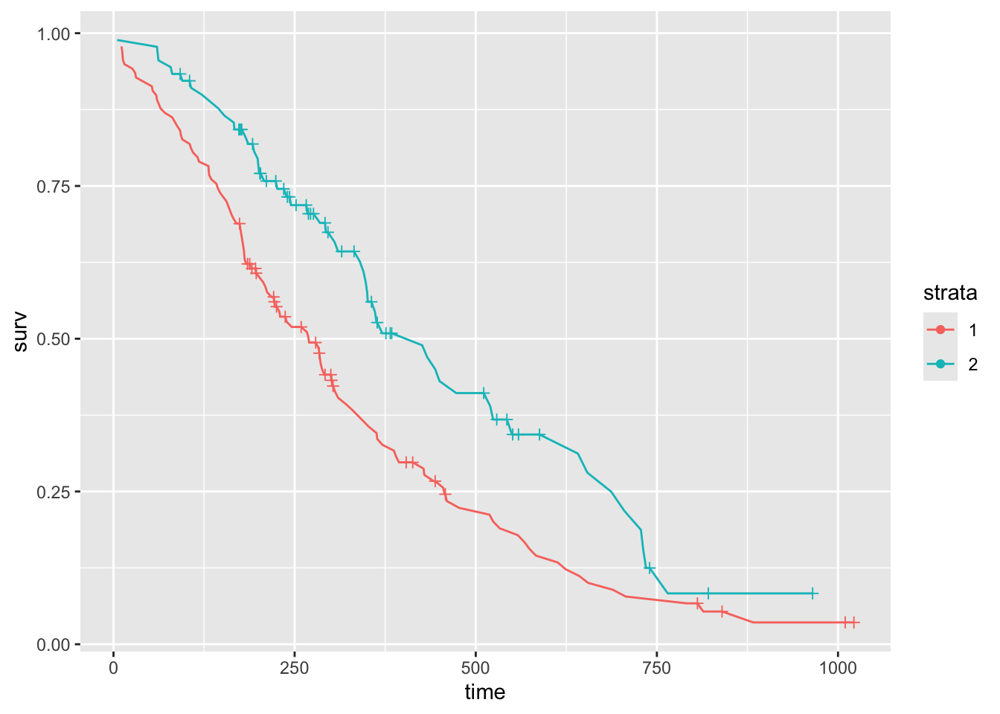
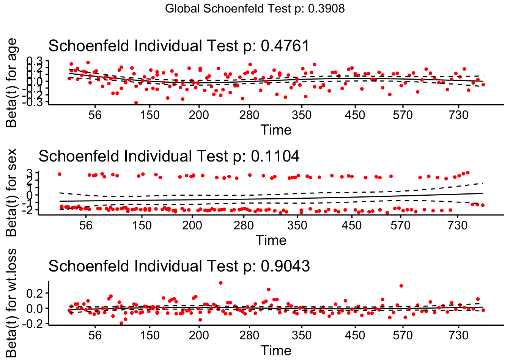
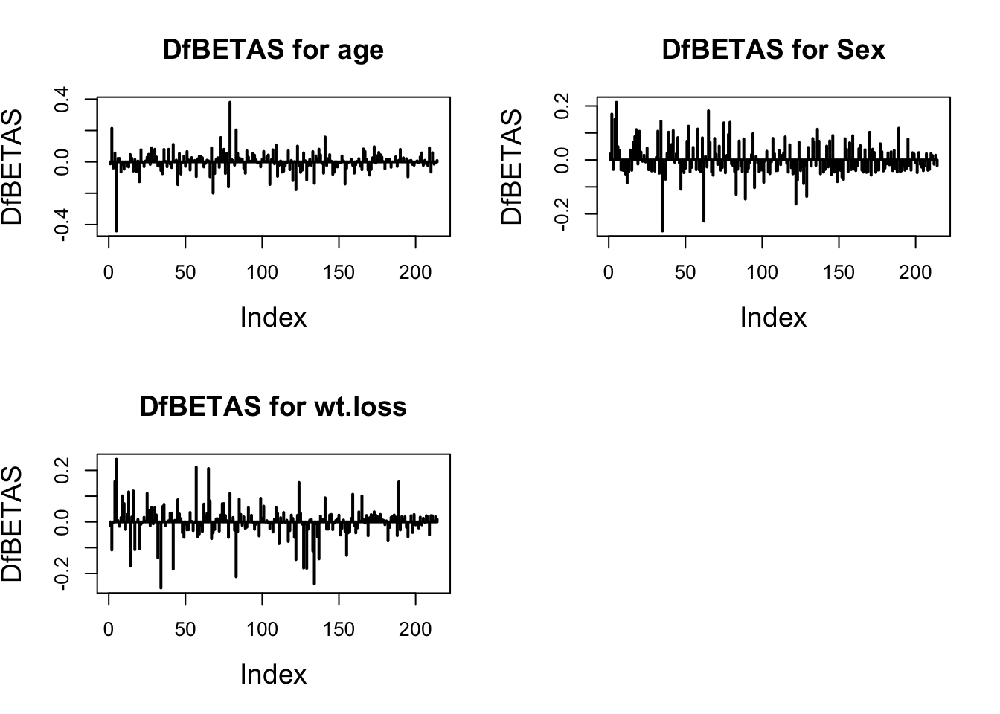

Survival Analysis
Preliminary
Survival analysis mainly focuses on processing a special kind of time data, and the time data may be partially censored. The shortcomings of the ordinary least squares regression method are that the event occurrence time is usually not normally distributed, and the model cannot handle Censor. The non-parametric method can simply and quickly check the survival experience, while the Cox proportional hazard regression model is still the main Analytical method.
Probability density function
The function that describes likelihood of observing Time at time t relative to all other survival times is known as the probability density function the probability of observing a survival time within the interval \([a, b]\) is \[ \operatorname{Pr}(a \leq \text { Time } \leq b)=\int_{a}^{b} f(t) d t=\int_{a}^{b} \lambda e^{-\lambda t} d t \] ## Cumulative distribution function
Describes the probability of observing Time less than or equal to some timet \(t\) \(\operatorname{Pr}(\) Time \(\leq t)\) \[ \begin{array}{c} F(t)=\int_{0}^{t} f(t) d t \\ f(t)=\frac{d F(t)}{d t} \end{array} \] In SAS, we can graph an estimate of the cdf using proc univariate.
proc univariate data = whas500(where=(fstat=1));
var lenfol;
cdfplot lenfol;
run;Survival function
\[ S(t)=P(T>t)=1-F(t) \] The survival function gives the probability that a person survives longer than some specified time \(t\) : that is, \(S(t)\) gives the probability that the random variable \(T\) exceeds the specified time \(t .\) And here, some important characteristics:
- It is nonincreasing; that is, it heads downward as \(t\) increases.
- At time \(t=0, S(t)=S(0)=1\); that is, at the start of the study, since no one has gotten the event yet, the probability of surviving past time zero is one.
- At time \(t=\inf , S(t)=S(\mathrm{inf})=0 ;\) that is, theoretically, if the study period increased without limit. eventually nobody would survive, so the survival curve must eventually fall to zero.
Here we can use proc lifetest to graph \(S_(t)\).
proc lifetest data=whas500(where=(fstat=1)) plots=survival(atrisk);
time lenfol*fstat(0);
run; Hazard function
The hazard function \(h(t)\), is given by the formula: \[ h(t)=\lim _{\Delta_{t} \rightarrow 0} \frac{P(t \leq T<t+\Delta t \mid T \geq t)}{\Delta t} \] We could say that the hazard function is the probability that if you survive to time \(t\), you will experience the event in the next instant, or in other words, the hazard function gives the instantaneous potential per unit time for the event to occur, given that the individual has survived up to time \(t\). Because of the given sign here, the hazard function is sometimes called a conditional failure rate.
We can estimate the hazard function is SAS as well using proc lifetest
proc lifetest data=whas500(where=(fstat=1)) plots=hazard(bw=200);
time lenfol*fstat(0);
run;Cumulative hazard function
Calculated by integrating the hazard function over an interval of time: \[H(t) = \int_0^th(u)du\]
The cumulative hazard function H(t) and the survival function S(t) have a simple monotonic relationship. Therefore, when the survival function reaches the maximum at the beginning of the analysis time, the cumulative hazard function is the smallest. As time goes by, the survival function advances toward its minimum, and the cumulative hazard function advances toward its maximum. You can use proc lifetest to estimate the cumulative hazard function, and then send the results to proc sgplot for plotting.
ods output ProductLimitEstimates = ple;
proc lifetest data=whas500(where=(fstat=1)) nelson outs=outwhas500;
time lenfol*fstat(0);
run;
proc sgplot data = ple;
series x = lenfol y = CumHaz;
run;Mean Residual Life
\[r(t)=E(T-t \mid T \geq t)=\frac{\int_{t}^{\infty} S(u) d u}{S(t)},\]
Intuitively, this is as simple as when I know that I have lived to the time point t and how many years I have to live.
Relation between functions
The survival function can be ascertained from the probability density function by integrating over the probability density function from time \(t\) to infinity, or by calculating the difference between one and the cumulative distribution function \(F(t)\). The hazard can then be found by dividing the negative derivative of the survival function by the survival function. Note that the functions \(f(t), F(t), h(t)\), and \(H(t)\) are all related.
Assume that \(T\) is non-negative and continuos:
- Probability density function: \[ f(t)=F^{\prime}(t)=\frac{d F(t)}{d t} \]
- Cumulative distribution function: \[ F(t)=P(T \leq t)=\int_{0}^{t} f(u) d u \]
- Survival function \[ \begin{array}{l} S(t)=1-F(t)\\ S(t)=P(T>t)=\int_{t}^{+\infty} f(u) d u \\ S(t)=\exp \left(-\int_{0}^{t} h(u) d u\right) \\ S(t)=\exp (-H(t)) \end{array} \]
- Hazard function \[h(t) = \frac{ f(t)}{S(t)}= \frac{ -d[S(t)]/dt}{S(t)}\]
- Cumulative hazard function o Cumulative hazard function \[ H(t)=\int_{0}^{t} h(u) d u \]
Assume that \(T\) is non-negative and discrete,
- Probability mass function: \[ \begin{aligned} p\left(t_{i}\right) &=P\left(T=t_{i}\right) \\ p\left(t_{i}\right) &=S\left(t_{i-1}\right)-S\left(t_{i}\right) \\ p\left(t_{i}\right) &=F\left(t_{i}\right)-F\left(t_{i-1}\right) \end{aligned} \]
- Cumulative distribution function: \[ F(t)=P(T \leq t)=\sum_{t_{i} \leq t} p\left(t_{i}\right) \]
- Survival function \[ S(t)=\prod_{t_{i} \leq t}\left(1-h\left(t_{i}\right)\right) \]
- Hazard function \[ \begin{aligned} h(t) &=\frac{p\left(t_{i}\right)}{S\left(t_{i-1}\right)}=\frac{-d[S(t)] / d t}{S(t)} \\ h(t) &=1-\frac{S\left(t_{i}\right)}{S\left(t_{i-1}\right)} \end{aligned} \]
- Cumulative hazard function \[ H(t)=\sum_{t_{i} \leq t} h\left(t_{i}\right) \]
Kaplan-Meier Estimator
Kaplan-Meier and Nelson-Aalen
\[\hat S(t)=\prod_{t_i\leq t}\frac{n_i – d_i}{n_i},\]
- \(n_{i}\) is the number of subjects at risk
- \(d_{i}\) is the number of subjects who fail, both at time \(t_{i}\), the number who failed out of \(n_{i}\)
Nelson-Aalen estimator of the cumulative hazard function
Since it and the survival function \(S(t)=e^{-H(t)}\) Nelson-Aalen estimator is a non-parametric estimator of the cumulative hazard function
\[ \hat{H}(t)=\sum_{t_{i} l e q t} \frac{d_{i}}{n_{i}} \]
- The Nelson-Aalen estimator is requested in SAS through the nelson option on the proc lifetest statement. SAS will output both Kaplan Meier estimates of the survival function and Nelson-Aalen estimates of the cumulative hazard function in one table.
- Quartile Estimates: Calculating median, mean, and other survival times
proc lifetest data=whas500 atrisk nelson;
time lenfol*fstat(0);
run;Survival Analysis in SAS
proc lifetest data=whas500 atrisk plots=survival(cb) outs=outwhas500;
time lenfol*fstat(0);
run;Graphing the Kaplan-Meier estimate
- By default, proc lifetest graphs the Kaplan Meier estimate, even without the plot= option on the proc lifetest statement, so we could have used the same code from above that produced the table of Kaplan-Meier estimates to generate the graph.
- However, we would like to add confidence bands and the number at risk to the graph, so we add plots=survival(atrisk cb)
The blue shaded area around the survival curve represents the 95% confidence band, here the Hall-Wellner confidence band. This confidence band is computed for the entire survival function, and must be wider than the pointwise confidence interval (the confidence interval around a single interval) at any given time interval to ensure that 95% of all pointwise confidence intervals are contained within the belt. Many transformations of the survivor function are available for alternatives to computing confidence intervals via the conftype option
Life Table method
The life table approach will have many unique event times if the number of observations is large, and if the event times are measured precisely. The KM method then produces longer tables that can be difficult to present and interpret.
- One way to solve this problem is to use the TIMELIST option (in the PROC LIFEREG statement), which only reports KM estimates at specified points in time.
- Another solution is to switch to the life-table method, where event times are grouped into intervals that can be set arbitrarily. In addition, the life table method (also known as the actuarial method) can generate estimates and plots of the hazard function. The disadvantage of the life table approach is that the choice of intervals is usually somewhat arbitrary, leading to arbitrariness in the results and uncertainty in how the intervals are chosen. Inevitably some information is also lost. Note, however, that PROC LIFETEST computes the log-rank and Wilcoxon statistics (and optionally other test statistics) on ungrouped data (if available), so they are not affected by the choice of intervals of the life table method.
ODS GRAPHICS ON;
PROC LIFETEST DATA=recid METHOD=LIFE PLOTS=(S,H);
TIME week*arrest(0);
RUN;
ODS GRAPHICS OFF;
Interval Number Number Sample Probability Standard
[Lower, Upper) Failed Censored Size of Failure Error
0 10 14 0 432.0 0.0324 0.00852
10 20 21 0 418.0 0.0502 0.0107
20 30 23 0 397.0 0.0579 0.0117
30 40 23 0 374.0 0.0615 0.0124
40 50 26 0 351.0 0.0741 0.0140
50 60 7 318 166.0 0.0422 0.0156Tests of equality of the survival function
The log-rank test, is a hypothesis test to compare the survival distributions of two samples. It is a nonparametric test and appropriate to use when the data are right-skewed and censored (technically, the censoring must be non-informative).
The logrank test is based on the same assumptions as the Kaplan-Meier survival curve—namely, that censoring is unrelated to prognosis, the survival probabilities are the same for subjects recruited early and late in the study, and the events happened at the times specified. Deviations from these assumptions matter most if they are satisfied differently in the groups being compared, for example if censoring is more likely in one group than another
The calculation of the statistic for the nonparametric “Log-Rank” and “Wilcoxon” tests is given by :
\[Q = \frac{\bigg[\sum\limits_{i=1}^m w_j(d_{ij}-\hat e_{ij})\bigg]^2}{\sum\limits_{i=1}^m w_j^2\hat v_{ij}},\]
- \(d_{i j}\) is the observed number of failures in stratum \(i\) at time \(t_{i j}\)
- \(\hat{e}_{i j}\) is the expected number of failures in stratum \(i\) at time \(t_{i j}\)
- \(\hat{v}_{i j}\) is the estimator of the variance of \(d_{i j}\)
- \(w_{j}\) is the weight of the difference at time \(t_{j}\)
- The log-rank or Mantel-Haenzel test uses \(w_{j}=1\)
- The Wilcoxon test uses \(w_{j}=n_{j}\), so that differences are weighted by the number at risk at time \(t_{j}\)
Specified, for group 1, the log-rank statistic can be written as
\[ \sum_{j=1}^{r}\left(d_{1 j}-e_{1 j}\right) \] where the summation is over all unique event times (in both groups), and there are a total of \(r\) such times. \(d_{1 j}\) is the number of deaths that occur in group 1 at time \(j\), and \(e_{1 j}\) is the expected number of events in group 1 at time \(j\). The expected number is given by \(n_{1 j} d_{j} / n_{j}\), where \(n_{j}\) is the total number of cases that are at risk just prior to time \(j, n_{1 j}\) is the number at risk just prior to time \(j\) in group 1, and \(d_{j}\) is the total number of deaths at time \(j\) in both groups.
The Wilcoxon statistic, given by
\[\sum_{j=1}^{r} n_{j}\left(d_{1 j}-e_{1 j}\right)\]
strata statement in proc lifetest in SAS
proc lifetest data=whas500 atrisk plots=survival(atrisk cb) outs=outwhas500;
strata gender;
time lenfol*fstat(0);
run;
Figure: Strata statement in proc lifetest
| Test of Equality over Strata | Title | Title | Title |
|---|---|---|---|
| Test | Chi-Square | DF | Pr > Chi-Square |
| Log-Rank | 7.7911 | 1 | 0.0053 |
| Wilcoxon | 5.5370 | 1 | 0.0186 |
| -2Log(LR) | 10.5120 | 1 | 0.0012 |
log-rank test v.s. Wilcoxon test
- If the log-rank test is meaningful but the Wilcoxon test is meaningless, it indicates that the long-term difference may be large, but not necessarily in the early stage, and the difference may not be large.
- If the log-rank test is meaningless and the Wilcoxon test is meaningful, it indicates that there is a large difference in early survival and little difference in long-term survival. Because the Wilcoxon test is more important for early weights than for late weights (nj does not increase with time), it is not as sensitive as log-rank test to differences between groups that occur at later time points. In other words, although the two statistics test the same null hypothesis, they have different sensitivities to various deviations from the hypothesis.
If the log-rank test is meaningful and the Wilcoxon test is meaningless, it indicates that the difference may be large in the long run, but not necessarily in the early stages, where the difference may not be large. If the log-rank test is insignificant but the Wilcoxon test is significant, it indicates that there is a large difference in early survival and little difference in long-term survival. Because the Wilcoxon test is more important for earlier weights than for heavier weights (nj does not increase over time)
In particular, the log-rank test is more powerful for detecting differences of the form \[S_{1}(t)=\left[S_{2}(t)\right]^{\gamma}, \gamma > 1\]
This equation defines a proportional hazards model, the log-rank test is closely related to tests for differences between two groups that are performed within the framework of Cox’s proportional hazards model
In contrast, the Wilcoxon test is more powerful than the log-rank test in situations where event times have log-normal distributions (discussed in the next chapter) with a common variance but with different means in the two groups.
Other nonparametric tests for STRATA statement
In addition to the log-rank and Wilcoxon tests, which are produced by default, the STRATA statement also has options for four other nonparametric tests:
- Tarone-Ware,
- Peto-Peto,
- modified Peto-Peto,
- Fleming-Harrington.
Like the Wilcoxon and log-rank tests, all of these can be represented as a weighted sum of observed and expected numbers of events:
STRATA treat / TESTS=ALL;For the Tarone-Ware test, \(w j\) is the square root of \(n i\), so this test behaves much like the Wilcoxon test in being more sensitive to differences at earlier rather than later times. \[ \sum_{j=1}^{r} w_{j}\left(d_{1 j}-e_{1 j}\right) \] That’s also true of the two Peto tests, for which \(w_{j}\) is a function of the survivor function itself. \[ \sum_{j=1}^{r} \hat{S}\left(t_{j}\right)\left(d_{1 j}-e_{1 j}\right) \] Fleming-Harrington is actually a family of tests in which the weights depend on two parameters, \(p\) and \(q\) which can be chosen by the user: \[w_{j}=\hat{S}\left(t_{j}\right)^{p}\left[1-\hat{S}\left(t_{j}\right)\right]^{q}\]
- When both \(\mathrm{p}\) and \(\mathrm{q}\) are 0 , you get the log-rank test.
- When \(\mathrm{p}\) is 1 and \(\mathrm{q}\) is 0 , you get something very close to the Peto-Peto test.
- When \(\mathrm{q}\) is 1 and \(\mathrm{p}\) is 0 , wi increases with time, unlike any of the other tests.
Multiple Comparisons
When more than one strata, the ADJUST option tells PROC LIFETEST to produce p-values for all six pairwise comparisons of the four strata and then to report p-values that have been adjusted for multiple comparisons using Tukey’s method (other methods are also available):
PROC LIFETEST DAta=my.recid;
TIME week*arrest(0);
STRATA wexp paro / ADJUST=TUKEY;
RUN;For numeric variables, you can use the STRATA statement to define groups by intervals rather than by unique values.
PROC LIFETEST DAta=my.recid;
TIME week*arrest(0);
STRATA age(21 24 28) / ADJUST=BON;
RUN;
age < 21
21 ≤ age < 24
24 ≤ age < 28
28 ≤ age Comparing Survival Functions using Log-Rank HR
One way to compare two survival curves is to calculate the hazard ratio (HR)
proc lifetest data=whas500 atrisk plots=hazard(bw=200) outs=outwhas500;
strata bmi(15,18.5,25,30,40);
time lenfol*fstat(0);
run;作为Kaplan-Meier计算的一部分，计算每个组中观察到的事件 (通常为死亡) 的数量, 以及假设生存时间 没有差异的零假设的预期事件的数量。危险比为: - Treatment A and Treatment B. the observed and expected deaths are summed, to give - \(O_{A}=\Sigma O_{A t}, O_{B}=\Sigma O_{B t}, E_{A}=\Sigma E_{A t}\), and \(E_{B}=\Sigma E_{B t}\) - Finally the Logrank statistic is calculated as \[ \chi_{\text {Logrank }}^{2}=\frac{\left(O_{A}-E_{A}\right)^{2}}{E_{A}}+\frac{\left(O_{B}-E_{B}\right)^{2}}{E_{B}} \] - It can be written as \[ \chi_{\text {Logrank }}^{2}=\left(O_{A}-E_{A}\right)^{2}\left(\frac{1}{E_{A}}+\frac{1}{E_{B}}\right) \] - since \(\left(O_{A}-E_{A}\right)^{2}=\left(O_{B}-E_{B}\right)^{2}\). - We can obtain the ratio \(O_{A} / E_{A}\) and \(\left.O_{B} / E_{B}\right)\), we can calculate the hazard ratio HR, defined as the ratio of these two relative death rates; that is, \[H R=\frac{O_{A} / E_{A}}{O_{B} / E_{B}}\]
Confidence Interval of HR
In calculating \(C I s\), it is convenient if the statistic under consideration can be assumed to follow an approximately Normal distribution. However, the estimate of the \(H R\) is not normally distributed. In particular it has a possible range of values from 0 to \(\infty\), with the null hypothesis value of unity not located at the centre of this interval. To make the scale symmetric and to enable us to calculate \(C I s\), we transform the estimate to make it approximately normally distributed. We do this by using log \(H R\), rather than \(H R\) itself, as the basis for our calculation. It is possible to show that a general \(100(1-\alpha) \% C I\) for the \(\log H R\) is Convert the estimated value to an approximately normal distribution. For this, we use logarithmic HR \[ \log H R-\left[z_{1-\alpha / 2} \times S E(\log H R)\right] \text { to } \log H R+\left[z_{1-\alpha / 2} \times S E(\log H R)\right] \] HR itself is then \[ \exp \left[\operatorname { l o g } H R - [ z _ { 1 - \alpha / 2 } \times S E ( \operatorname { l o g } H R ) ] \text { to } \operatorname { e x p } \left[\log H R+\left[z_{1-\alpha / 2} \times S E(\log H R)\right]\right.\right. \] In both these expressions \[S E(\log H R)=\sqrt{\left(\frac{1}{E_{A}}+\frac{1}{E_{B}}\right)}\]
KM Plots
Suppose we need confidence bands that can be interpreted by saying that we are \(95 \%\) confident that the entire survivor function falls within the upper curve and the lower curve. More complex methods are needed to produce such bands, and PROC LIFETEST offers two: the HallWellner method and the equal precision (EP) method. There is 95% confidence that the entire survivor function falls between the upper and lower curves. Generating such bands requires more sophisticated methods, and PROC LIFETEST offers two methods: the HallWellner method and the equal precision (EP) method.
+ The EP method tends to produce confidence bands that are more stable in the tails. To implement this method, the option becomes PLOTS $=\mathrm{S}(\mathrm{CB}=$EP) . To get both pointwise and EP bands, use the option PLOTS $=\mathrm{S}(\mathrm{CL} \mathrm{CB}=\mathrm{EP})$ Confidence bands are always wider than pointwise confidence limits
+ Other transformations are available, the most attractive being the logit $\log [\hat{S}(t) /(1-\hat{S}(t))]$ To switch to this transform, include the CONFTYPE=LOGIT option in the PROC statement.proc lifetest data=whas500 atrisk PLOTS=S(NOCENSOR ATRISK CL) OUTSURV=outwhas500;
time lenfol*fstat(0);
run;Test in plot
ODS GRAPHICS ON;
PROC LIFETEST DATA=myel PLOTS=S(TEST);
TIME dur*status(0);
STRATA treat;
RUN;
ODS GRAPHICS OFF;log-log survival plots
LS produces a plot of \(-\log \hat{S}(t)\) versus \(t\). \[ -\log S(t)=\int_{0}^{t} h(u) d u \]
The LLS keyword produces a plot of \(\log [-\log \hat{S}(t)]\) versus \(\log t\). If survival times follow a Weibull distribution, which has a hazard given by \(\log h(t)=\alpha+\beta \log t\), then the log-log survival plot (log cumulative hazard plot) should be a straight line with a slope of \(\beta\). If the hazards are proportional, the log-log survivor functions should be strictly parallel.
PROC LIFETEST DATA=COMBINE PLOTS=LLS;
TIME years*event(0);
STRATA type;
RUN; Hazard plots
Examine smoothed hazard plots using the kernel smoothing option
ODS GRAPHICS ON;
PROC LIFETEST DATA=combine PLOTS=H(BW=10);
TIME years*event(0);
STRATA type;
RUN;
ODS GRAPHICS OFF;
# confidence limits around the hazard function;
PROC LIFETEST DATA=recid PLOTS=H(CL);Survival Analysis (survfit) in R
Fit Model
Survival function \(S(t) = 1-F(t)\), hazard function
\[ \begin{equation*} \lambda(t) = \lim_{\Delta_{t} \to 0^{+}} \frac{P(t \leq T < t + \Delta_{t} \, | \, T \geq t)}{\Delta_{t}} = \frac{P(t \leq T < t + \Delta_{t}) / \Delta_{t}}{P(T > t)} = \frac{f(t)}{S(t)}, \quad t \geq 0 \end{equation*} \]
# Compute survival curves
data("lung")
(fit <- survfit(Surv(time, status) ~ 1, type="kaplan-meier",
conf.type="log", data = lung))## Call: survfit(formula = Surv(time, status) ~ 1, data = lung, type = "kaplan-meier",
## conf.type = "log")
##
## n events median 0.95LCL 0.95UCL
## [1,] 228 165 310 285 363# Stratification
(fit2 <- survfit(Surv(time, status) ~ sex, type="kaplan-meier",
conf.type="log", data = lung))## Call: survfit(formula = Surv(time, status) ~ sex, data = lung, type = "kaplan-meier",
## conf.type = "log")
##
## n events median 0.95LCL 0.95UCL
## sex=1 138 112 270 212 310
## sex=2 90 53 426 348 550Convert Personal-level to Personal-period in R
In studies of survival or modeling discrete-time events, one compact way to store data is in what may be called, “person-level” or generally “observation-level”. For example, you could have three variables, one indicating the observation, one indicating the time period the event occurred or the last follow-up period and one indicating whether the observation was censored.
The PLPP function takes five arguments. The first, data is the data set to be converted. The second, id is the name of the variable containing the identifier for each observation. The third, period is the name of the variable that indicates how many periods the person or observation was in. The fourth, event is the name of the variable that indicates whether the event occurred or not or whether the observation was censored (depending on which direction you are converting). The fifth, direction indicates whether the function should go from person-level to person-period or from person-period to person-level. There are two options, “period” to go to person-period or “level” to go to person-level. Now let’s try it out. For the examples that follow to work, you need to source the function into R.
# Person-Level Person-Period Converter Function
PLPP <- function(data, id, period, event, direction = c("period", "level")){
# Data Checking and Verification Steps
stopifnot(is.matrix(data) || is.data.frame(data))
stopifnot(c(id, period, event) %in% c(colnames(data), 1:ncol(data)))
if (any(is.na(data[, c(id, period, event)]))) {
stop("PLPP cannot currently handle missing data in the id, period, or event variables")
}
# Do the conversion
switch(match.arg(direction),
period = {
index <- rep(1:nrow(data), data[, period])
idmax <- cumsum(data[, period])
reve <- !data[, event]
dat <- data[index, ]
dat[, period] <- ave(dat[, period], dat[, id], FUN = seq_along)
dat[, event] <- 0
dat[idmax, event] <- reve},
level = {
tmp <- cbind(data[, c(period, id)], i = 1:nrow(data))
index <- as.vector(by(tmp, tmp[, id],
FUN = function(x) x[which.max(x[, period]), "i"]))
dat <- data[index, ]
dat[, event] <- as.integer(!dat[, event])
})
rownames(dat) <- NULL
return(dat)
}
# Read in the person-level dataset
teachers <- read.csv("./01_Datasets/teachers.csv")
# Look at a subset of the cases
subset(teachers, id %in% c(20, 126, 129))# Uses PLPP to convert to person-period and store in object, 'tpp'
tpp <- PLPP(data = teachers, id = "id", period = "t", event = "censor", direction = "period")
# Look at a subset of the cases
subset(tpp, id %in% c(20, 126, 129))## Convert person-period to person-level
# Read in person-period dataset
teachers.pp <- read.csv("./01_Datasets/teachers_pp.csv")
# Look at a subset of the cases
subset(teachers.pp, id %in% c(20, 126, 129))Summary Lifer Table
## Alternative 1: function survfit() returns a list of variables,components can be accessed as follow:
fit <- survfit(Surv(time, status) ~ sex, type="kaplan-meier",
conf.type="log", data = lung)
d <- data.frame(time = fit$time,
n.risk = fit$n.risk,
n.event = fit$n.event,
n.censor = fit$n.censor,
surv = fit$surv,
upper = fit$upper,
lower = fit$lower
)
head(d)## Alternative 2: For Summary table from Survfit with Strata
res <- summary( survfit(Surv(time, status) ~ sex, type="kaplan-meier",
conf.type="log", data = lung))
cols <- lapply(c(2:6, 8:11) , function(x) res[x])
tbl <- do.call(data.frame, cols)
head(tbl)## Alternative 3: Kaplan-Meier life table: summary of survival curves summary(fit)
res.sum <- surv_summary(fit)
head(res.sum)## Alternative 4: use the ggfortify library and can plot your survival curves with ggplot.
library("ggfortify")
# extract results to a data.frame
res <- fortify(fit)
head(res)options(warn = -1)
ggplot(data = res, aes(x = time, y = surv, color = strata)) +
geom_line() +
# plot censor marks
geom_point(aes(shape = factor(ifelse(n.censor >= 1, 1, NA)))) +
# format censor shape as "+"
scale_shape_manual(values = 3) +
# hide censor legend
guides(shape = "none") 
options(warn = 0)Arbitrary quantiles
# Alternative 1: Access to the sort summary statistics table
summary(fit)$table## records n.max n.start events rmean se(rmean) median 0.95LCL 0.95UCL
## sex=1 138 138 138 112 326.0841 22.91156 270 212 310
## sex=2 90 90 90 53 460.6473 34.68985 426 348 550quantile(fit, probs=c(0.25, 0.5, 0.75), conf.int=TRUE)## $quantile
## 25 50 75
## sex=1 144 270 457
## sex=2 226 426 687
##
## $lower
## 25 50 75
## sex=1 107 212 387
## sex=2 186 348 550
##
## $upper
## 25 50 75
## sex=1 177 310 574
## sex=2 340 550 NA## Estimated mean survival time
print(fit, print.rmean=TRUE)## Call: survfit(formula = Surv(time, status) ~ sex, data = lung, type = "kaplan-meier",
## conf.type = "log")
##
## n events rmean* se(rmean) median 0.95LCL 0.95UCL
## sex=1 138 112 326 22.9 270 212 310
## sex=2 90 53 461 34.7 426 348 550
## * restricted mean with upper limit = 1022## 50-day and 100-day survival including point-wise confidence interval.
summary(fit, times=c(50, 100))## Call: survfit(formula = Surv(time, status) ~ sex, data = lung, type = "kaplan-meier",
## conf.type = "log")
##
## sex=1
## time n.risk n.event survival std.err lower 95% CI upper 95% CI
## 50 128 10 0.928 0.0221 0.885 0.972
## 100 114 14 0.826 0.0323 0.765 0.892
##
## sex=2
## time n.risk n.event survival std.err lower 95% CI upper 95% CI
## 50 89 1 0.989 0.0110 0.967 1.000
## 100 82 6 0.922 0.0283 0.868 0.979# Alternative 2: The surv_summary object also has an attribute called "table" that contains information about the survival curves, including the survival median with confidence intervals and the total number of subjects and events in each curve
res.sum <- surv_summary(fit)
attr(res.sum, "table")# Alternative 3: from gtsummary package
library("gtsummary")
tbl_survfit(
survfit(Surv(time, status) ~ sex, type="kaplan-meier",
conf.type="log", data = lung),
probs = c(0.25, 0.5, 0.75),
label_header = "**{prob} Percentile**"
)| Characteristic | 0.25 Percentile | 0.5 Percentile | 0.75 Percentile |
|---|---|---|---|
| sex | |||
| 1 | 144 (107, 177) | 270 (212, 310) | 457 (387, 574) |
| 2 | 226 (186, 340) | 426 (348, 550) | 687 (550, —) |
list(
survfit(Surv(time, status) ~ 1, type="kaplan-meier",
conf.type="log", data = lung),
survfit(Surv(time, status) ~ sex, type="kaplan-meier",
conf.type="log", data = lung)
) %>%
tbl_survfit(probs = c(0.25, 0.5, 0.75),
label_header = "**{prob} Percentile**")| Characteristic | 0.25 Percentile | 0.5 Percentile | 0.75 Percentile |
|---|---|---|---|
| Overall | 170 (145, 197) | 310 (285, 363) | 550 (460, 654) |
| sex | |||
| 1 | 144 (107, 177) | 270 (212, 310) | 457 (387, 574) |
| 2 | 226 (186, 340) | 426 (348, 550) | 687 (550, —) |
Confidence Interval
# Confidence Interval type
# One of "none", "plain", "log" (the default), "log-log", "logit" or "arcsin".
# The plain option standard interval curven +-k *se(curve)
# The log option calculates intervals based on the cumulative hazard or log(survival).
# The log-log option bases the intervals on the log hazard or log(-log(survival)),
# The logit option on log(survival/(1- survival)) and arcsin on arcsin(survival).
# 1) normal distribution assumption S(t) +- SE(S(t)) * u_(1-alpha/2)
survfit(Surv(time, status) ~ sex, data = lung, conf.type="plain")## Call: survfit(formula = Surv(time, status) ~ sex, data = lung, conf.type = "plain")
##
## n events median 0.95LCL 0.95UCL
## sex=1 138 112 270 212 306
## sex=2 90 53 426 345 524# 2) log-Methode,nicht in Vorlesung
survfit(Surv(time, status) ~ sex, data = lung, conf.type="log")## Call: survfit(formula = Surv(time, status) ~ sex, data = lung, conf.type = "log")
##
## n events median 0.95LCL 0.95UCL
## sex=1 138 112 270 212 310
## sex=2 90 53 426 348 550# 3) log-log-Methode
# S(t)^(exp(+-SE(log(-logS(t)))*u_(1-alpha/2))), dabei muss SE(log(-logS(t))) mit Formel (2.16) berechnet werden
# ( nicht: S(t)^(exp(+-SE *(log(-logS(t)))*u_(1-alpha/2))) )
survfit(Surv(time, status) ~ sex, data = lung, conf.type="log-log")## Call: survfit(formula = Surv(time, status) ~ sex, data = lung, conf.type = "log-log")
##
## n events median 0.95LCL 0.95UCL
## sex=1 138 112 270 210 306
## sex=2 90 53 426 345 524Survival Probability
tbl_survfit(
survfit(Surv(time, status) ~ sex, type="kaplan-meier",
conf.type="log", data = lung),
times = c(180, 240),
label_header = "**{time} Days**"
)| Characteristic | 180 Days | 240 Days |
|---|---|---|
| sex | ||
| 1 | 64% (57%, 73%) | 53% (45%, 62%) |
| 2 | 84% (77%, 92%) | 73% (64%, 83%) |
list(
survfit(Surv(time, status) ~ 1, type="kaplan-meier",
conf.type="log", data = lung),
survfit(Surv(time, status) ~ sex, type="kaplan-meier",
conf.type="log", data = lung)
) %>%
tbl_survfit(times = c(180, 240),
label_header = "**{time} Days**")| Characteristic | 180 Days | 240 Days |
|---|---|---|
| Overall | 72% (67%, 78%) | 61% (55%, 68%) |
| sex | ||
| 1 | 64% (57%, 73%) | 53% (45%, 62%) |
| 2 | 84% (77%, 92%) | 73% (64%, 83%) |
Log-Rank Test
# Survival curves comparing
# When rho=0, log-rank test or Mantel-Haenszel test is performed.
# When rho=1, the Peto correction test of Gehan-Wilcoxon is performed, which gives a greater weight to the early outcome events. But this is not the Wilcoxon test
(surv_diff <- survdiff(Surv(time, status) ~ sex, data = lung, rho=0))## Call:
## survdiff(formula = Surv(time, status) ~ sex, data = lung, rho = 0)
##
## N Observed Expected (O-E)^2/E (O-E)^2/V
## sex=1 138 112 91.6 4.55 10.3
## sex=2 90 53 73.4 5.68 10.3
##
## Chisq= 10.3 on 1 degrees of freedom, p= 0.001(surv_diff <- survdiff(Surv(time, status) ~ sex, data = lung, rho=1))## Call:
## survdiff(formula = Surv(time, status) ~ sex, data = lung, rho = 1)
##
## N Observed Expected (O-E)^2/E (O-E)^2/V
## sex=1 138 70.4 55.6 3.95 12.7
## sex=2 90 28.7 43.5 5.04 12.7
##
## Chisq= 12.7 on 1 degrees of freedom, p= 4e-04# Extracting information from a survdiff object
1 - pchisq(surv_diff$chisq, length(surv_diff$n) - 1)## [1] 0.0003628989KM Survival Plots in R
# Change color, linetype by strata, risk.table color by strata
ggsurvplot(fit,
pval = TRUE, conf.int = TRUE,
risk.table = TRUE, # Add risk table
risk.table.col = "strata", # Change risk table color by groups
linetype = "strata", # Change line type by groups
surv.median.line = "hv", # Specify median survival
ggtheme = theme_bw(), # Change ggplot2 theme
palette = c("#E7B800", "#2E9FDF"))
# The plot can be further customized
ggsurvplot(
fit, # survfit object with calculated statistics.
pval = TRUE, # show p-value of log-rank test.
conf.int = TRUE, # show confidence intervals for
# point estimaes of survival curves.
conf.int.style = "step", # customize style of confidence intervals
xlab = "Time in days", # customize X axis label.
break.time.by = 200, # break X axis in time intervals by 200.
ggtheme = theme_light(), # customize plot and risk table with a theme.
risk.table = "abs_pct", # absolute number and percentage at risk.
risk.table.y.text.col = T,# colour risk table text annotations.
risk.table.y.text = FALSE,# show bars instead of names in text annotations
# in legend of risk table.
ncensor.plot = TRUE, # plot the number of censored subjects at time t
surv.median.line = "hv", # add the median survival pointer.
legend.labs =
c("Male", "Female"), # change legend labels.
palette =
c("#E7B800", "#2E9FDF") # custom color palettes.
)
## Plot cumulative events
# fun = "event" cumulative events
# fun = "log": log transformation
# fun = "cumhaz": cumulative hazard
# plot cumulative events
ggsurvplot(fit,
conf.int = TRUE,
risk.table.col = "strata", # Change risk table color by groups
ggtheme = theme_bw(), # Change ggplot2 theme
palette = c("#E7B800", "#2E9FDF"),
fun = "event")
# Plot log survival curve
ggsurvplot(fit,
conf.int = TRUE,
risk.table.col = "strata", # Change risk table color by groups
ggtheme = theme_bw(), # Change ggplot2 theme
palette = c("#E7B800", "#2E9FDF"),
fun = "log")
# Plot cummulative hazard
# The cummulative hazard is commonly used to estimate the hazard probability
ggsurvplot(fit,
conf.int = TRUE,
risk.table.col = "strata", # Change risk table color by groups
ggtheme = theme_bw(), # Change ggplot2 theme
palette = c("#E7B800", "#2E9FDF"),
fun = "cumhaz")
# Complex survival curves in grouping
fit2 <- survfit( Surv(time, status) ~ sex + rx + adhere,
data = colon )
# Plot survival curves by sex and facet by rx and adhere
ggsurv <- ggsurvplot(fit2, fun = "event", conf.int = TRUE,
ggtheme = theme_bw())
ggsurv$plot +theme_bw() +
theme (legend.position = "right")+
facet_grid(rx ~ adhere)
Accelerated Failure Time (AFT) Model
Introduction
The accelerated failure time model (AFT model) is a parametric model that can replace the commonly used proportional hazard model. The proportional hazard model assumes that the role of the covariate is to multiply the risk by a certain constant, while the AFT model assumes that the role of the covariate is to accelerate or slow down the life course of the disease by a certain constant. The AFT model describes the relationship between the survivor functions of any two individuals in its most general form.
Assuming that \(T\) is the failure time and \(x\) is the covariate, the assumption of the accelerated failure time model is that the survival time of a person is equal to the baseline survival time of the population, the acceleration factor of this person, and its mathematical form is as follows: \[ T=t * e^{\theta \cdot x}, t=e^{\mu+\sigma * W} \] Common forms also include: \[ S(t \mid x)=S_{0}\left(t * e^{\theta \cdot x}\right) \] \[ Y=\log (T)=\mu+\gamma \cdot x+\sigma * W \] Among them, the baseline survival time \(t\) of the population obeys a certain probability distribution, and the \(W\) is also a random variable that obeys a certain probability distribution.
PH & AFT
- AFT Model is based on time T modeling, and PH Model is based on Hazard modeling
- Weibull regression is the only regression that satisfies both model assumptions
For PH Model: \[\quad \lambda_{i}(t)=\lambda_{0}(t) \exp \left(x_{i}^{T} \beta\right)\] For AFT Model: \[\lambda_{i}(t)=\lambda_{0}\left(\exp \left(-x_{i}^{T} \beta\right) t\right) \exp \left(-x_{i}^{T} \beta\right)\]
这是由于 \(T_{i}=\exp \left(x_{i}^{T} \beta\right) T_{0}\), 因此 \[ S_{i}(t)=P\left(T_{i} \geq t\right)=P\left(T_{0} \geq \exp \left(-x_{i}^{T} \beta\right) t\right)=S_{0}\left(\exp \left(-x_{i}^{T} \beta\right) t\right) \] \[ f_{i}(t)=f_{0}\left(\exp \left(-x_{i}^{T} \beta\right) t\right) \exp \left(-x_{i}^{T} \beta\right) \] \[ \lambda_{i}(t)=\exp \left(-x_{i}^{T} \beta\right) \lambda_{0}\left(\exp \left(-x_{i}^{T} \beta\right) t\right) \]
Intuitively, the larger the \(x_{i}^{T} \beta\), the longer the survival time. Since S is a monotonic non-decreasing function, the survival curve is higher. From a logarithmic perspective
PH Model: \[ \log \lambda_{i}(t)=\log \lambda_{0}(\exp (\log t))+x_{i}^{T} \beta \] AFT Model: \[ \log \lambda_{i}(t)=\log \lambda_{0}\left(\exp \left(\log t-x_{i}^{T} \beta\right)\right)-x_{i}^{T} \beta \]
Parametric Model in SAS
Introduction of Proc Lifereg
The LIFEREG program uses the maximum likelihood method to generate the estimated value of the parameter regression model using censored survival data [method of maximum likelihood]. To some extent, PROREG LIFEREG has been obscured by the PHREG program, which uses a method known as partial likelihoo for semiparametric regression analysis [method known as partial likelihoo].
PROC LIFEREG is by no means obsolete. It can do some better things than PROC PHREG, and it can do other things that PROC PHREG simply cannot do:
- PROC LIFEREG accommodates left censoring and interval censoring. PROC PHREG allows only right censoring.
- With PROC LIFEREG, you can test certain hypotheses about the shape of the hazard function. PROC PHREG gives you only nonparametric estimates of the survivor function, which can be difficult to interpret.
- If the shape of the survival distribution is known, PROC LIFEREG produces more efficient estimates (with smaller standard errors) than PROC PHREG.
- PROC LIFEREG can easily generate predicted event times for any specified set of covariate values. This is more difficult with PHREG, and often impossible.
- PROC LIFEREG’s greatest limitation is that it does not handle time-dependent covariates, something at which PROC PHREG excels.
What PROC LIFEREG actually estimates is a special case of this model that is quite similar in form to an ordinary linear regression model. Let \(T_{i}\) be a random variable denoting the event time for the ith individual in the sample, and let \(x_{i 1}, \ldots, x_{i k}\) be the values of \(k\) covariates for that same individual. The model is then \[ \log T_{i}=\beta_{0}+\beta_{1} x_{i 1}+\ldots+\beta_{k} x_{i k}+\sigma \varepsilon_{i} \] where \(\varepsilon_{i}\) is a random disturbance term, and \(\beta_{0}, \ldots, \beta_{k}\), and \(\sigma\) are parameters to be estimated. Exponentiating both sides gives an alternative way of expressing the model: \[ T_{i}=\exp \left(\beta_{0}+\beta_{1} x_{i 1}+\ldots+\beta_{k} x_{i k}+\sigma \varepsilon_{i}\right) \] In regression analysis, \(-\log (T)\) represents fixed effects, and \(\epsilon\) represents noise. Different \(\epsilon\) distribution means different distribution of \(T_{0}\).
According to a simple transformation, we have \(T_{i}=\exp \left(x_{i}^{T} \beta\right) T_{0}, T_{0}=\exp (W)\). Therefore, the AFT model parameter \(\beta\) represents: when the jth dimension changes in \(\Delta_{j}\), the survival time will change \(\exp \left(\Delta_{j} \beta_{j}\right )\)
Residuum distribution
Assuming \(Y=\log T\), the AFT Model can be expressed as \[ Y_{i}=x_{i}^{T} \beta+W_{i} \] \(W_{i} \sim f\) represents the independent residual
- If \(W \sim N\left(0, \sigma^{2}\right)\), the model at this time is called Lognormal-AFT Model. Because the assumption of normality for \(Y\) is equivalent to the assumption of lognormality. At this time, if there is no censorship, we can directly use the LSE (least squares) method to solve the problem (in fact, there is rarely such a possibility). Survival data usually has at least some vetted observations, and it is difficult to process these observations with OLS (Ordinary Least Squares). Instead, we can use maximum likelihood estimation.
- If \(W \sim W \operatorname{libull}(\lambda, \gamma)\), the model at this time is called Weibull regression model. It is a special AFT Model.
- Following surmmaries the model
\[ \begin{array}{c|l} \text { Distribution of } \varepsilon & \text { Distribution of } T \\ \hline \text { extreme value (2 par.) } & \text { Weibull } \\ \text { extreme value (1 par.) } & \text { exponential } \\ \text { log-gamma } & \text { gamma } \\ \text { logistic } & \text { log-logistic } \\ \text { normal } & \text { log-normal } \end{array} \]
Specify Model in SAS
*** Lognormal-AFT Model;
PROC LIFEREG DATA=recid;
MODEL week*arrest(0)=fin age race wexp mar paro prio / DISTRIBUTION=LNORMAL;
RUN;Exponential Model
The simplest model estimated by PROC LIFEREG is the exponential model, which is called by DISTRIBUTION = EXPONENTIAL in the MODEL statement. The model specifies that \(\varepsilon\) has a standard extreme-value distribution and constrains \(\sigma=1\). If \(\varepsilon\) has an extreme value distribution, then the logarithm T also has an extreme value distribution, provided that the covariate is the condition. Constant hazard function, expresses the exponential regression model as \[ \log h(t)=\beta_{0}^{\bullet}+\beta_{1}^{\bullet} x_{1}+\ldots+\beta_{k}^{\bullet} x_{k} \]
Interpretation
\[\lambda_{i}(t)=\lambda(t) \exp \left(x_{i}^{T} \beta\right), \lambda(t) \geq 0\] Where \(\lambda(t)=\lambda\) \[\frac{\lambda_{1}(t)}{\lambda_{2}(t)}=\exp \left(\Delta_{j} \beta_{j}\right), \Delta_{j}=x_{1 j}-x_{2 j}\] Therefore, the meaning of the parameter \(\beta_{j}\) is: when the data \(x_{j}\) changes with the size of \(\Delta_{j}\), the Hazard Ratio of the model will change \(\exp \left(\Delta_{ j} \beta_{j}\right)\)
Weibull Model
The Weibull model is a slight modification of the exponential model with great consequences. By specifying DISTRIBUTION = WEIBULL in the MODEL statement, we retain the assumption that \(\varepsilon\) has a standard extreme value distribution, but relax the assumption of \(\sigma=1\).
- When \(\sigma\)> 1, the danger decreases with time.
- When \(0.5<\sigma<1\), the risk is increasing at a reduced rate.
- When \(0<\sigma<0.5\), the danger is increasing at an increasing rate.
- -When \(\sigma=0.5\), the hazard function is a straight line and its starting point is 0.
Weibull Distribution
\[ \begin{array}{l} \lambda(t)=\lambda \gamma(t \lambda)^{\gamma-1} \\ \Lambda(t)=(t \lambda)^{\gamma} \\ S(t)=\exp \left[-(t \lambda)^{\gamma}\right] \\ f(t)=\lambda \gamma(t \lambda)^{\gamma-1} \exp \left((t \lambda)^{\gamma}\right) \end{array} \]
Connection with exponential distribution
If \(X \sim \operatorname{Exp}(\tau)\), then \(T=X^{\sigma} \sim\) Weibull \(\left(\gamma=1 / \sigma, \lambda=\tau^{\ sigma}\right)\) also, - For exponential distribution, \(\quad \log S(t)=(-\log t)+C_(1)\) - For Weibull distribution, \(\quad \log S(t)=\gamma(-\log t)+C_{2}\)
T has a Weibull distribution conditioned on covariates.it has a relatively simple survival function, which is easy to manipulate mathematically: (where \(\mathbf{x}_{i}\) is a vector of the covariate values and $ $ is a vector of coefficients.) \[ S_{i}(t)=\exp \left\{-\left[t_{i} e^{-\beta \mathbf{x}_{i}}\right]^{\frac{1}{\sigma}}\right\} \] Secondly, in addition to the AFT model, the Weibull model is also a proportional hazard model. This means that its coefficient (after proper conversion) can be interpreted as a relative hazard ratio. In fact, the Weibull model (and its special case, the exponential model) is the only model that belongs to both categories. Like the exponential model, there is a completely equivalent relationship between the logarithmic risk forms of the model \[ \log h(t)=\alpha \log t+\beta_{0}^{\bullet}+\beta_{1}^{\bullet} x_{1}+\ldots+\beta_{k}^{\bullet} x_{k} \] and the log-survival time model \[ \log T_{i}=\beta_{0}+\beta_{1} x_{1}+\ldots+\beta_{k} x_{k}+\sigma \varepsilon \] However, the relationship between the parameters is slightly more complicated. Specifically, for the Weibull model \[ \beta_{j}^{\bullet}=\frac{-\beta_{j}}{\sigma} \text { for } j=1, \ldots, k \] \[\alpha=(1 / \sigma)-1.\]
# Output
# σˆ (labeled “Scale” 0.7124 in Output) is between 0 and 1
# calculate αˆ = (1/.7124)–1=0.4037, which is the coefficient for log t
in the log-hazard model.
# “Weibull Shape.” This is not an independent parameter but merely
the reciprocal of the Shape parameter (that is, 1/σˆ ). Log-Normal Model
Unlike the Weibull model, the lognormal model has a non-monotonic hazard function. When t=0, the danger is 0. It rises to a peak, and then drops to 0 as t approaches infinity. The log normal is not a proportional hazard model, and its risk function cannot be expressed in a closed form. However, it can be expressed as a regression model, where the dependent variable is the log hazard. \[ \log h(t)=\log h_{0}\left(t e^{-\beta x}\right)-\beta \mathbf{x} \] where \(h_{0}\) (.) can be interpreted as the hazard function for an individual with \(\mathbf{x}=\mathbf{0}\). (personal hazard function)
Log-Logistic Model
An inverted U-shaped hazard is the log-logistic model, which assumes that ε has a logistic distribution with \[ f(\varepsilon)=\frac{e^{\varepsilon}}{\left(1+e^{\varepsilon}\right)^{2}} \]
DISTRIBUTION=LLOGISTIC, The logical distribution is symmetrical, with an average value of 0, and is very similar in shape to the normal distribution. If \(\varepsilon\) has a logarithmic distribution, then the logarithm \(T\) (although the mean is non-zero) has a logarithmic distribution. The loglogistic hazard function is \[ h(t)=\frac{\lambda \gamma(\lambda t)^{\gamma-1}}{1+(\lambda t)^{\gamma}} \] where \(\gamma=1 / \sigma\), and \[ \lambda=\exp \left\{-\left[\beta_{0}+\beta_{1} x_{1}+\ldots+\beta_{k} x_{k}\right]\right\} \]
- When \(\sigma<1\), the logarithmic logic hazard is similar to the lognormal hazard: starting from 0, rising to the peak, and then falling to 0.
- When \(\sigma>1\), the hazard behaves like a diminishing Weibull hazard: it starts at infinity and then decreases towards 0.
- When \(\sigma=1\), the hazard value at t \(=0\) is \(\lambda\), and then decreases toward 0 as t tends to infinity.
Although the logarithmic logic model has the complexity of the hazard function, it has a fairly simple survival function \[ S(t)=\frac{1}{1+(\lambda t)^{\gamma}} \] As before, \(\gamma=1 / \sigma\) and \(\lambda=\exp \left\{-\left[\beta_{0}+\beta_{1} x_{1}+\ldots+\beta_{k} x_{k}\right]\right\} .\) A little algebra shows that this can be written as \[ \log \left[\frac{S(t)}{1-S(t)}\right]=\beta_{0}^{\bullet}+\beta_{1}^{\bullet} x_{1}+\ldots+\beta_{k}^{\bullet} x_{k}-\gamma \log t \] Where \(\beta_{i}^{\bullet}=\beta_{i} / \sigma\) for \(i=1, \ldots, k\). 这只是事件 \(t\) 之前发生的概率的逻辑回归模型。
Fit statistics for model comparsion
The statistical information largely depends on the sample size.
- Akaike’s information criterion (AIC), is a modification of the \(-2\) log-likelihood that penalizes models for having more covariates. where \(\mathrm{k}\) is the number of covariates. \[ A I C=-2 \log L+2 k \]
- (AICC) is a “corrected” version of the AIC that may have better behavior in small samples: \[ A I C C=A I C+\frac{2 k(k+1)}{n-k-1} \]
- Bayesian information criterion (also known as Schwarz’s criterion) gives a more severe penalization for additional covariates (对其他协变量进行更严厉的惩罚) \[ B I C=-2 \log L+k \log n \]
Graphical method for distinguishing different distributions in SAS
- the PLOTS=LS option produces a plot of -log and t. If the true distribution is an exponential distribution, the graph should produce a straight line with an origin of 0
- The LLS option produces a plot of −loglog versus log t, if the true distribution is Weibull, it should be a straight line;
Prediction and hazard function
After fitting the model with PROC LIFEREG, sometimes it is desirable to generate predicted survival times for the observations in the data set. If a single point estimate is to be made for each person, the predicted median survival time may be the best. You can easily get this information using the OUTPUT statement.
P in the OUTPUT statement = option request percentile. By default, PROC LIFEREG calculates the 50th percentile (ie median). You can use the QUANTILE keyword to request other percentiles, as described in the PROC LIFEREG documentation. The STD keyword requests the standard error of the median.
PROC LIFEREG DATA=recid;
MODEL week*arrest(0)=fin age race wexp mar paro prio
/ D=WEIBULL;
OUTPUT OUT=a P=median STD=s;
RUN;Predict the probability of survival to a specified time
PROC LIFEREG DATA=recid OUTEST=a;
MODEL week*arrest(0) = fin age race wexp mar paro prio
/ D=WEIBULL;
OUTPUT OUT=b XBETA=lp;
RUN;
%PREDICT(OUTEST=a,OUT=b,XBETA=lp,TIME=30)
%macro predict (outest=, out=_last_,xbeta=,time=);
data _pred_;
_p_=1;
set &outest point=_p_;
set &out;
lp=&xbeta;
t=&time;
gamma=1/_scale_;
alpha=exp(-lp*gamma);
prob=0;
_dist_=upcase(_dist_);
if _dist_='WEIBULL' or _dist_='EXPONENTIAL' or _dist_='EXPONENT' then prob=exp(-
alpha*t**gamma);
if _dist_='LOGNORMAL' or _dist_='LNORMAL' then prob=1-probnorm((log(t)-lp)/_scale_);
if _dist_='LLOGISTIC' or _dist_='LLOGISTC' then prob=1/(1+alpha*t**gamma);
if _dist_='GAMMA' then do;
d=_shape1_;
k=1/(d*d);
u=(t*exp(-lp))**gamma;
prob=1-probgam(k*u**d,k);
if d lt 0 then prob=1-prob;
end;
drop lp gamma alpha _dist_ _scale_ intercept
_shape1_ _model_ _name_ _type_ _status_ _prob_ _lnlike_ d k u;
run;
proc print data=_pred_;
run;
%mend predict;
*** %LIFEHAZ generated a graph of hazard versus time;
PROC LIFEREG DATA=recid OUTEST=a;
MODEL week*arrest(0) = fin age race wexp mar paro prio
/ D=WEIBULL;
OUTPUT OUT=b XBETA=lp;
RUN;
%LIFEHAZ(OUTEST=a,OUT=b,XBETA=lp)
%macro lifehaz(outest=,out=,obsno=0,xbeta=lp);
data;
set &outest;
call symput('time',_NAME_);
run;
proc means data=&out noprint;
var &time &xbeta;
output out=_c_ min(&time)=min max(&time)=max mean(&xbeta)=mean;
run;
data;
set &outest;
call symput('model',_dist_);
s=_scale_;
d=_shape1_;
_y_=&obsno;
set _c_ (keep=min max mean);
if _y_=0 then m=mean;
else do;
set &out (keep=&xbeta) point=_y_;
m=&xbeta;
end;
inc=(max-min)/300;
g=1/s;
alph=exp(-m*g);
_dist_=upcase(_dist_);
if _dist_='LOGNORMAL' or _dist_='LNORMAL' then do;
do t=min to max by inc;
z=(log(t)-m)/s;
f=exp(-z*z/2)/(t*s*sqrt(2*3.14159));
Surv=1-probnorm(z);
h=f/Surv;
output;
end;
end;
else if _dist_='GAMMA' then do;
k=1/(d*d);
do t=min to max by inc;
u=(t*exp(-m))**(1/s);
f=abs(d)*(k*u**d)**k*exp(-k*u**d)/(s*gamma(k)*t);
Surv=1-probgam(k*u**d,k);
if d lt 0 then Surv=1-Surv;
h=f/Surv;
output;
end;
end;
else if _dist_='WEIBULL' or _dist_='EXPONENTIAL' or _dist_='EXPONENT' then do;
do t=min to max by inc;
h=g*alph*t**(g-1);
output;
end;
end;
else if _dist_='LLOGISTIC' or _dist_='LLOGISTC' then do;
do t=min to max by inc;
h=g*alph*t**(g-1)/(1+alph*t**g);
output;
end;
end;
else put 'ERROR:DISTRIBUTION NOT FITTED BY LIFEREG';
run;
proc gplot;
plot h*t / haxis=axis2 vaxis=axis1 vzero;
symbol1 i=join v=none c=black;
axis1 label=(f=titalic angle=90 'Hazard');
axis2 label=(f=titalic justify=c 'time' f=titalic justify=c "&model");
run; quit;
%mend lifehaz;Left Censoring and Interval Censoring
PROC LIFEREG excludes any observations with a time of 0 or less, because it must take the logarithm of the event time as the first step. One way is to assign some arbitrarily chosen number between 0 and 1. A more elegant solution is to treat this situation as being censored at time 1.
- For uncensored observations, LOWER and UPPER have the same value.
- For observations with YEARS=0, we set LOWER=. and UPPER=1.
- For right-censored observations (including those with events other than the one of interest), UPPER=. and LOWER=YEARS.
- If both UPPER and LOWER are missing (which happens for individuals with YEARS=0 who have events other than the one of interest), the observation is excluded. T
DATA leaders2;
SET leaders;
lower=years;
upper=years;
IF years=0 THEN DO;
lower=.;
upper=1;
END;
IF lost IN (0,1,2) THEN upper=.;
RUN;
*** fit an exponential model;
PROC LIFEREG DATA=leaders2;
CLASS region;
MODEL (lower,upper)= manner start military age conflict
loginc literacy region / D=EXPONENTIAL;
RUN;Parametric Model in R
Fit Weibull-model
Shape parameter \(a > 0\), scale parameter \(b > 0\), such that \(f(t) = \lambda(t) \, S(t)\) with hazard-function \(\lambda(t) = \frac{a}{b} \left(\frac{t}{b}\right)^{a-1}\) and survival-function \(S(t) = \exp(-(\frac{t}{b})^{a})\). Cumulative hazard-function is \(\Lambda(t) = (\frac{t}{b})^{a}\) with inverse \(\Lambda^{-1}(t) = (b \, t)^{\frac{1}{a}}\). \(E(T) = b \, \Gamma(1 + \frac{1}{a})\). The exponential distribution is a special case for \(a = 1\).
Alternative parametrization:
Setting \(\lambda = \frac{1}{b^{a}}\), such that \(\lambda(t) = \lambda \, a \, t^{a-1}\), \(S(t) = \exp(-\lambda \, t^{a})\) and \(\Lambda(t) = \lambda \, t^{a}\). The influence of covariates \(X_{j}\) causes \(\lambda' = \lambda \, e^{\bf{X} \bf{\beta}}\).
Assumptions (note that \(\bf{X} \bf{\beta}\) does not include an intercept \(\beta_{0}\))
\[ \begin{equation*} \begin{array}{rclcl} \lambda(t) &=& \frac{a}{b} \left(\frac{t}{b}\right)^{a-1} \, e^{\bf{X} \bf{\beta}} &=& \lambda \, a \, t^{a-1} \, e^{\bf{X} \bf{\beta}}\\ \ln \lambda(t) &=& \ln \left(\frac{a}{b} \left(\frac{t}{b}\right)^{a-1}\right) + \bf{X} \bf{\beta} &=& \ln \lambda + \ln a + (a-1) \, \ln t + \bf{X} \bf{\beta}\\ S(t) &=& \exp\left(-(\frac{t}{b})^{a} \, e^{\bf{X} \bf{\beta}}\right) &=& \exp\left(-\lambda \, t^{a} \, e^{\bf{X} \bf{\beta}}\right)\\ \Lambda(t) &=& (\frac{t}{b})^{a} \, e^{\bf{X} \bf{\beta}} &=& \lambda \, t^{a} \, e^{\bf{X} \bf{\beta}} \end{array} \end{equation*} \]
Simulated right-censored event times with Weibull distribution
set.seed(123)
N <- 180 # number of observations
P <- 3 # number of groups
sex <- factor(sample(c("f", "m"), N, replace=TRUE)) # stratification factor
X <- rnorm(N, 0, 1) # continuous covariate
IV <- factor(rep(LETTERS[1:P], each=N/P)) # factor covariate
IVeff <- c(0, -1, 1.5) # effects of factor levels (1 -> reference level)
Xbeta <- 0.7*X + IVeff[unclass(IV)] + rnorm(N, 0, 2)
weibA <- 1.5 # Weibull shape parameter
weibB <- 100 # Weibull scale parameter
U <- runif(N, 0, 1) # uniformly distributed RV
eventT <- ceiling((-log(U)*weibB*exp(-Xbeta))^(1/weibA)) # simulated event time
# censoring due to study end after 120 days
obsLen <- 120 # length of observation time
censT <- rep(obsLen, N) # censoring time = end of study
obsT <- pmin(eventT, censT) # observed censored event times
status <- eventT <= censT # has event occured?
dfSurv <- data.frame(obsT, status, sex, X, IV) # data frame
## Survival data in counting process (start-stop) notation.
dfSurvCP <- survSplit(dfSurv, cut=seq(30, 90, by=30), end="obsT",
event="status", start="start", id="ID", zero=0)
## Plot simulated data
plot(ecdf(eventT), xlim=c(0, 200), main="Cumulative survival distribution",
xlab="t", ylab="F(t)", cex.lab=1.4)
abline(v=obsLen, col="blue", lwd=2)
text(obsLen-5, 0.2, adj=1, labels="end of study", cex=1.4)## Fit Weibull-model
fitWeib <- survreg(Surv(obsT, status) ~ X + IV, dist="weibull", data=dfSurv)
summary(fitWeib)##
## Call:
## survreg(formula = Surv(obsT, status) ~ X + IV, data = dfSurv,
## dist = "weibull")
## Value Std. Error z p
## (Intercept) 3.1672 0.1779 17.80 < 2e-16
## X -0.6585 0.1138 -5.79 7.1e-09
## IVB 1.0942 0.2634 4.15 3.3e-05
## IVC -0.5840 0.2432 -2.40 0.01631
## Log(scale) 0.2393 0.0625 3.83 0.00013
##
## Scale= 1.27
##
## Weibull distribution
## Loglik(model)= -673.9 Loglik(intercept only)= -703.6
## Chisq= 59.38 on 3 degrees of freedom, p= 8e-13
## Number of Newton-Raphson Iterations: 5
## n= 180fitWeib %>%
tbl_regression(exponentiate = TRUE)| Characteristic | exp(Beta) | 95% CI1 | p-value |
|---|---|---|---|
| X | -0.66 | -0.88, -0.44 | <0.001 |
| IV | |||
| A | — | — | |
| B | 1.09 | 0.58, 1.61 | <0.001 |
| C | -0.58 | -1.06, -0.11 | 0.016 |
| 1 CI = Confidence Interval | |||
citation("gtsummary")## To cite gtsummary in publications use:
##
## Sjoberg DD, Whiting K, Curry M, Lavery JA, Larmarange J. Reproducible
## summary tables with the gtsummary package. The R Journal
## 2021;13:570–80. https://doi.org/10.32614/RJ-2021-053.
##
## A BibTeX entry for LaTeX users is
##
## @Article{gtsummary,
## author = {Daniel D. Sjoberg and Karissa Whiting and Michael Curry and Jessica A. Lavery and Joseph Larmarange},
## title = {Reproducible Summary Tables with the gtsummary Package},
## journal = {{The R Journal}},
## year = {2021},
## url = {https://doi.org/10.32614/RJ-2021-053},
## doi = {10.32614/RJ-2021-053},
## volume = {13},
## issue = {1},
## pages = {570-580},
## }Transform AFT parameter \(\hat{\gamma}_{j} = - \hat{\beta}_{j} \cdot \hat{a}\) to parameter \(\hat{\beta}_{j}\) a Cox PH model.
## AFT parameters
(betaHat <- -coef(fitWeib) / fitWeib$scale)## (Intercept) X IVB IVC
## -2.4932013 0.5183936 -0.8613157 0.4597344## Cox PH parameters
fitCox <- coxph(Surv(obsT, status) ~ X + IV, data=dfSurv)
coef(fitCox)## X IVB IVC
## 0.4930364 -0.8224490 0.3766960Fit Exponential Model
Exponential model = restricted Weibull model with shape parameter \(a = 1\).
fitExp <- survreg(Surv(obsT, status) ~ X + IV, dist="exponential", data=dfSurv)
coef(fitExp)## (Intercept) X IVB IVC
## 3.2765279 -0.6491499 1.0059347 -0.5709446Model Comparisons
anova(fitExp, fitWeib) # model comparison## Test significance of factor IV (associated with multiple effect parameters) as a whole by doing a model comparison against the restricted model without factor IV.
## restricted model without IV
fitR <- survreg(Surv(obsT, status) ~ X, dist="weibull", data=dfSurv)
anova(fitR, fitWeib) Predict using New Data
Apply fit to new data with specific observations. Result from
predict() is the estimated distribution function \(\hat{F}^{-1}(t)\) for given percentiles
p.
dfNew <- data.frame(sex=factor(c("m", "m"), levels=levels(dfSurv$sex)),
X=c(0, 0),
IV=factor(c("A", "C"), levels=levels(dfSurv$IV)))
percs <- (1:99)/100
FWeib <- predict(fitWeib, newdata=dfNew, type="quantile", p=percs, se=TRUE)
matplot(cbind(FWeib$fit[1, ],
FWeib$fit[1, ] - 2*FWeib$se.fit[1, ],
FWeib$fit[1, ] + 2*FWeib$se.fit[1, ]), 1-percs,
type="l", main=expression(paste("Weibull-Fit ", hat(S)(t), " mit SE")),
xlab="t", ylab="Survival", lty=c(1, 2, 2), lwd=2, col="blue")
matlines(cbind(FWeib$fit[2, ],
FWeib$fit[2, ] - 2*FWeib$se.fit[2, ],
FWeib$fit[2, ] + 2*FWeib$se.fit[2, ]), 1-percs, col="red", lwd=2)
legend(x="topright", lwd=2, lty=c(1, 2, 1, 2), col=c("blue", "blue", "red", "red"),
legend=c("sex=m, X=0, IV=A", "+- 2*SE", "sex=m, X=0, IV=C", "+- 2*SE"))Cox Proportional Hazards Model
Introduction
The basic model that does not include time-dependent covariates or nonproportional hazards. The model is usually written as \[h_{i}(t)=\lambda_{0}(t) \exp \left(\beta_{1} x_{i 1}+\ldots+\beta_{k} x_{i k}\right)\] Taking the logarithm of both sides, we can rewrite the model as \[\log h_{i}(t)=\alpha(t)+\beta_{1} x_{i 1}+\ldots+\beta_{k} x_{i k}\] Take the ratio of the hazards for two individuals \(i\) and \(j\) \[\frac{h_{i}(t)}{h_{j}(t)}=\exp \left\{\beta_{1}\left(x_{i 1}-x_{j}\right)+\ldots+\beta_{k}\left(x_{i k}-x_{j k}\right)\right\}\]
Partial Likelihood
If censoring is not considered, \(\quad j\) observations \(T_{1} \sim \lambda_{1}(t), T_{2} \sim \lambda_{2}(t), \ldots T_{j } \sim \lambda_{j}(t)\) satisfies under the assumption of Cox Regression \[ P\left(T_{1}<T_{2}<\ldots<T_{J}\right)=\prod_{i=1}^{J} \frac{\lambda_{j}(t)}{\sum_{k=j}^{J} \lambda_{k}(t)}=\prod_{i=1}^{J} \frac{\exp \left(x_{j}^{T} \beta\right)}{\sum_{k=j}^{J} \exp \left(x_{k}^{T} \beta\right)} \] Furthermore, when the censor be considered, the time point of death event is denoted as \(t_{j}\), then the \(\mathrm{P}(death)\) \[ \mathrm{P}(death)=\frac{\exp \left(x_{j}^{T} \beta\right)}{\sum_{k \in R\left(t_{j}\right)} \exp \left(x_{k} \beta\right)} \] given the subject’s covariates \(\beta\); the joint probability of observing each subject’s failure time can be calculated given the subject’s covariates values \(x_{j}\) likelihood \(L(\beta)\) could be expressed as \[ L(\beta)=\prod_{j} \frac{\exp \left(x_{j}^{T} \beta\right)}{\sum_{k \in R\left(t_{j}\right)} \exp \left(x_{k} \beta\right)} \] \(k \in R\left(t_{j}\right)\) represents at time \(t_{j}-\) the subject \(k\) is still alive. Here we temporarily assume that there is only one death observation at time \(t_{j}\).
Strictly speaking, this is not a likelihood function. Because the likelihood function should represent the continuous multiplication of the distribution function under the given data, but the above formula is obviously not. Even speaking, the continuous multiplication should be about the continuous multiplication of the individual, and the above formula is about the point in time. Cox (1975) called this form of likelihood Partial Likelihood, and proved that all its properties are the same as likelihood.
NR Iteration for Parameter Estimate
The iteration form is \[ \hat{\beta}^{(r+1)}=\hat{\beta}^{(r)}+\left(X^{T} WX\right)^{-1} X^{T} (dP d) \]
- \(w_{i}=\exp \left(x_{i}^{T} \beta\right)\)
- \(Y_{i}\left(t_{j}\right)\) 1 if the individual is still alive at the moment \(t_{j}\), \(Y_{i}\left(t_{j}\right)\) Is the index of an individual’s survival at a certain time \(t_{j}\)
- \(\pi_{ij}=Y_{i}\left(t_{j}\right) \frac{w_{i}}{\sum_{k \in R\left(t_{j}\right)} w_ {k}}=Y_{i}\left(t_{j}\right) \frac{w_{i}}{\sum_{k=1}^{n} Y_{k}\left(t_{j} \right) w_{k}}\)
- \(P=\left\{\pi_{i j}\right\}_{i, j}\), represents the relative death risk of the individual \(i\) at time \(t_{j}\). So we only consider individuals who are still alive
- \(W_{k k}=-\sum_{i} \delta_{i} \pi_{k i}\left(1-\pi_{k i}\right), W_{k k}\) represents the weighting of the individual. Whenever one of the remaining individuals \(i\) dies, if \(k\) is still alive, its weight increases by \(\pi(1-\pi)\)
- \(W_{k j}=\sum_{i} \delta_{i} \pi_{k i} \pi_{j i}, k j\) represents the interaction of the individual \(k\). Whenever one of the remaining individuals dies, if \(k, j\) are still alive \((\) Y will Set), the interaction weight increases \(\pi_(k) \pi_(j)\)
Parameter test
In standard likelihood theory, one can derive three forms of the test of \(H_0: {\beta}=0\): the Wald test, the score test, and the likelihood ratio test. In survival analysis, we may use the partial likelihood to derive these three tests, although the underlying statistical theory for the partial likelihood is far more complex than that for standard likelihood theory.
To develop the tests, we need two functions derived from the partial log likelihood. The first, the score function, is the first derivative of the log likelihood, \(S(\beta)=l^{\prime}(\beta)\). The second function, the information, is minus the derivative of the score function, or equivalently minus the second derivative of the log-likelihood, \(I(\beta)=-S^{\prime}(\beta)=-l^{\prime \prime}(\beta)\). The second derivative \(l^{\prime \prime}(\beta)\) is also known as the Hessian. With the substitution of the parameter estimate \(\hat{\beta}\) into the information, we obtain the observed information.
Wald Test
\[\quad \hat{\beta} \sim N\left(\beta,\left(X^{T} W X\right)^{-1}\right)\]
The Wald test is perhaps the most commonly used test, and carrying it out is straightforward from computer output. The test statistic is of the form \(Z=\) \(\hat{\beta} /\) s.e. \((\hat{\beta})\), where “s.e.” stands for “standard error.” In the previous section, we saw that \(\hat{\beta}\) was the value of \(\beta\) that maximizes \(l(\beta)\). We know from basic differential calculus that we may find the maximum by solving \(S(\beta)=l^{\prime}(\beta)=0\) for \(\beta\). Ordinarily this is a non-linear function that must be solved numerically using an iterative procedure. To find the variance of \(\hat{\beta}\), we evaluate the information, \(I(\hat{\beta})=\) \(-l^{\prime \prime}(\hat{\beta})\). That is, the information (technically, the “observed information”) is minus the second derivative of the partial likelihood, evaluated at \(\hat{\beta} . I(\hat{\beta})\) is a measure of the curvature of the likelihood at \(\hat{\beta}\). Intuitively, higher values of the curvature reflect a sharper curve, more “information”, and lower variance. Lower curvatures, by contrast, corresponds to flatter curves and higher variance. The variance of \(\hat{\beta}\) is approximately \(1 / I(\hat{\beta})\), and the standard error is \(\operatorname{s.e} .(\hat{\beta})=1 / \sqrt{I(\hat{\beta})}\). We may use this to construct a normalized test statistic \(Z_w=\hat{\beta} / \operatorname{se}(\hat{\beta})\), and reject \(H_0: \beta=0\) if \(\left|Z_w\right|>z_{\alpha / 2}\). We can also construct a \(1-\alpha\) confidence interval, \(\hat{\beta} \pm z_{\alpha / 2} \cdot\) s.e. \((\hat{\beta})\). Equivalently, we can use the fact that the square of a standard normal random variable has a chi-square distribution with one degree of freedom, and reject the null hypothesis if \(Z_w^2>\chi_{\alpha, 1}^2\).
Likelihood Ratio Test
The likelihood ratio test uses the result from statistical theory that \(2[l(\beta=\hat{\beta})-l(\beta=0)]\) follows approximately a chi-square distribution with one degree of freedom. The key advantage of this test over the other two is that it is invariant to monotonic transformations of \(\beta\). For example, whether the test is computed in terms of \(\beta\) or in terms of \(\psi=e^\beta\) has no effect at all on the p-value for testing \(H_0: \beta=0\).
Score Test
The score function is the first derivative of the partial log-likelihood, \(S(\beta)=\) \(l^{\prime}(\beta)\). The variance of the score statistic is \(I(\beta)\). We evaluate the score and information at the null hypothesis value of \(\beta\), normally \(\beta=0\). The test statistic is \(Z_s=S(\beta=0) / \sqrt{I(\beta=0)}\), and we reject \(H_0: \beta=0\) if \(\left|Z_s\right|>z_{\alpha / 2}\), or equivalently if \(Z_s^2>\chi_{\alpha, 1}^2\). The score test is equivalent to the log-rank test, as we saw in the previous section. This test can be carried out without finding the maximum likelihood estimate \(\hat{\beta}\).
Check Proportional Hazards
A central assumption of Cox regression is that covariate effects on the hazard rate, namely hazard ratios, are constant over time. For example, if males have twice the hazard rate of females 1 day after followup, the Cox model assumes that males have twice the hazard rate at 1000 days after follow up as well. Violations of the proportional hazard assumption may cause bias in the estimated coefficients as well as incorrect inference regarding significance of effects.
Graphing Check
Graphing Kaplan-Meier survival function estimates to assess proportional hazards for categorical covariates
In the case of categorical covariates, graphs of the Kaplan-Meier estimates of the survival function provide quick and easy checks of proportional hazards. If proportional hazards holds, the graphs of the survival function should look “parallel”, in the sense that they should have basically the same shape, should not cross, and should start close and then diverge slowly through follow up time.
Another graphical methods for checking proportional hazards is to plot log(-log(S(t))) vs. t or log(t) and look for parallelism. This can be done only for categorical covariates
proc lifetest data=whas500 atrisk plots=survival(atrisk cb) outs=outwhas500; strata gender; time lenfol*fstat(0); run;Schoenfeld Residuals
Plotting scaled Schoenfeld residuals vs functions of time to assess proportional hazards of a continuous covariate + \[E(s^\star_{kp}) + \hat{\beta}_p \approx \beta_j(t_k)\] + \(s^\star_{kp}\) is the scaled Schoenfeld residual of the covariate \(p\) at time \(k\), \(\beta_p\) is the time-invariant coefficient, and \(\beta_j(tk)\) is the time-varying coefficient. In other words, the average value of the Schoenfeld residual of the coefficient \(k\) at time \(k\) estimates the coefficient change at time \(k\). Therefore, if the average value of the whole time is 0, it means that the coefficient \(p\) will not change with time, and the proportional hazard assumption applies to the covariate \(p\).
```
proc phreg data=whas500;
class gender;
model lenfol*fstat(0) = gender|age bmi|bmi hr;
output out=schoen ressch=schgender schage schgenderage
schbmi schbmibmi schhr;
run;
data schoen;
set schoen;
loglenfol = log(lenfol);
run;
proc loess data = schoen;
model schage=lenfol / smooth=(0.2 0.4 0.6 0.8);
run;
proc loess data = schoen;
model schage=loglenfol / smooth=(0.2 0.4 0.6 0.8);
run;
```res.cox <- coxph(Surv(time, status) ~ age + sex + wt.loss, data = lung)
test.ph <- cox.zph(res.cox)
test.ph## chisq df p
## age 0.5077 1 0.48
## sex 2.5489 1 0.11
## wt.loss 0.0144 1 0.90
## GLOBAL 3.0051 3 0.39# The test of each covariate is not statistically significant, and the global test is not statistically significant. Therefore, we can take proportional risk.
# In principle, Schoenfeld residuals have nothing to do with time. A chart showing a non-random graph showing time changes over time indicates a violation of the PH assumption
ggcoxzph(test.ph)
# The solid line is the smooth spline fit of the curve, and the dashed line represents the +/- 2 standard error band around the fit. System deviation from the horizontal line indicates non-proportional hazard, because proportional hazard assumes that the estimated values β1, β2, and β3 do not change much over time.ph Option in SAS
Option ph tells SAS that in addition to checking the functional form, we also want to evaluate the proportional hazard. As before, we specify the resampling option to request the highest test of the null hypothesis that the proportional hazard holds.
These tests calculate the proportion of simulated score processes that produce a maximum score greater than the observed maximum score process. A small percentage (p-value) indicates that the percentage is violated
```
proc phreg data=whas500;
class gender;
model lenfol*fstat(0) = gender|age bmi|bmi hr;
assess var=(age bmi bmi*bmi hr) ph / resample ;
run;
```| Supremum Test for Proportionals Hazards Assumptio | Title | Title | Title | Title |
|---|---|---|---|---|
| Variable | Maximum Absolute Value | Replications | Seed | Pr > MaxAbsVal |
| GENDERFemale | 0.6394 | 1000 | 778428000 | 0.7680 |
| AGE | 0.4965 | 1000 | 778428000 | 0.9600 |
| BMI | 5.9813 | 1000 | 778428000 | 0.2890 |
| BMIBMI | 5.9350 | 1000 | 778428000 | 0.3160 |
| HR | 0.8861 | 1000 | 778428000 | 0.3080 |
Dealing with nonproportionality
If nonproportional hazards are detected, the researcher has many options with how to address the violation (Therneau & Grambsch, 2000):
Ignore the nonproportionality if it appears the changes in the coefficient over time are very small or if it appears the outliers are driving the changes in the coefficient. In large datasets, very small departures from proportional hazards can be detected. If, say, a regression coefficient changes only by 1% over time, it is unlikely that any overarching conclusions of the study would be affected. Additionally, a few heavily influential points may be causing nonproportional hazards to be detected, so it is important to use graphical methods to ensure this is not the case.
Stratify the model by the nonproportional covariate. Stratification allows each stratum to have its own baseline hazard, which solves the problem of nonproportionality. However, one cannot test whether the stratifying variable itself affects the hazard rate significantly. Additionally, although stratifying by a categorical covariate works naturally, it is often difficult to know how to best discretize a continuous covariate. This can be easily accomplished in proc phreh with the strata statement.
Include covariate interactions with time as predictors in the Cox model. This can be accomplished through programming statements in proc phreg, as these interactions are time-varying covariates themselves. Indeed, including such an interaction has been used as a test of proportional hazards — a significant interaction indicates violation of the assumption. Below, we provide code that shows how to include a covariate interaction with time in the model.
Model Diagnostics
Cox-Snell Residuals
The residual represents the part that the explanatory variable cannot explain, in the case of censoring \[\hat{e}_{i}=\hat{\Lambda}_{0}\left(t_{i}\right) \exp \left(x_{i}^{T} \beta\right)\]
\(\hat(\Lambda)\) can be estimated by \(KM\) (or \(NA\)). Compare Cox-Snell Residuals with the standard exponential distribution, because \(Y=\Lambda(t) \sim \operatorname(Exp)(1)]\) , Get the residual plot. However, this has a little flaw, because it is not easy for us to observe the situation close to the origin. Therefore, we use standardized difference for transformation. \[ (\hat{\Lambda}(e)-\Lambda(e)) / S E=(\hat{\Lambda}(e)-e) / S E \] However, the Cox-Snell residual is flawed: it has no way to tell us where the assumptions of the model are wrong.
Martingale Residuals
An important tool for assessing the goodness of fit of a model is to compare the censoring indicator ( 0 for censored, 1 for death) for each subject to the expected value of that indicator under the proportional hazards Cox model. If there are no time dependent covariates and if the survival times are right-censored, this is given by \[ m_i=\delta_i-\hat{H}_0\left(t_i\right) \exp \left(z_i^{\prime} \hat{\beta}\right) \]
It represents the difference between the observed value of the sample death index \(\left(\delta_{i}\right)\) and the average value \(\left(\hat{e}_{i}\right)\). Among them, the average is about the average over time. Positive and negative are meaningful. Positive, it means that the patient died earlier than the expected time; negative, it means that the patient lived longer (or censored). But it is asymmetrical. The maximum value of \(\quad \hat{m}_{i}\) is 1, but the minimum value is infinite.
Deviance Residuals
\[\hat{d}_{i}=\operatorname{sign}\left(\hat{m}_{i}\right) \sqrt{2\left(\tilde{l}_{i}-l_{i}\right)},\]
\(\hat{m}_{i}=\delta_{i}-\hat{e}_{i}, \quad l_{i}\) is the corresponding likelihood of i sample (given model), \(\tilde{l }_{i}\) represents the maximum likelihood (generally the full model). It retains the positive and negative nature of the residual error, and adds the idea of likelihood (in fact, many tests are based on deviance), which is symmetric.
Schoenfeld Residuals
The Schoenfeld residual of the observation j and the covariate p is defined as the difference between the covariate p of the observation j and the weighted average of the covariate values of all subjects who are still at risk when the event occurs on the observation j. \[E(s^\star_{kp}) + \hat{\beta}_p \approx \beta_j(t_k)\]
Schoenfeld Residuals are used to validate the above assumptions made by the Cox model. The Cox model makes three assumptions:
- Common baseline hazard rate \(\lambda(t)\) : At any time \(t\), all individuals are assumed to experience the same baseline hazard \(\lambda(t)\). For example, if a study consists of males and females belonging to different races and age groups, then at any time \(t\) during the study, white males who entered the study when they were in the 18-34 years age range are assumed to experience the same baseline hazard \(\lambda(t)\) as Asian females who entered the study when they \(40-64\) year old. This is clearly a strong assumption and one must validate it before accepting results of the Cox model for your data set.
- Time invariant co-variates \(X\) : The effect of the regression variables \(\boldsymbol{X}\) (a.k.a. co-variates) on the instantaneous hazard experienced by an individual is assumed to remain constant over time. For example, if a volunteer enters a study of cancer risk to smokers, and if the participant’s genetic makeup is a co-variate, then the effect of their genes on the hazard of contracting cancer is assumed to remain constant throughout the study. Notation-wise, \(\boldsymbol{X}\left(t_{-} i\right)=\boldsymbol{X}\) for all \(t_{-} i\). This is again a rather strong assumption that should be validated. For example, gene expression can vary with time in response to a number of factors.
- Time invariant regression coefficients \(\beta:\) The regression coefficients \(\boldsymbol{\beta}\) do not vary with time. In other words, \(\boldsymbol{\beta}\left(\mathrm{t}_{-} i\right)=\boldsymbol{\beta}\) for all \(t_{-} i\). One can see that assumptions (2) and (3) are closely related. For example, the effect of gene expression increasing with time can be expressed as the coefficient of the gene regression variable increasing with time.
Influential Observations
To test influential observations or outliers, we can visualize either:
- the deviance residuals or
- the dfbeta values
# ggcoxdiagnostics(fit, type = , linear.predictions = TRUE)
# type: the type of residuals to present on Y axis. Allowed values include one of
# c(“martingale”, “deviance”, “score”, “schoenfeld”, “dfbeta”, “dfbetas”, “scaledsch”, “partial”).
ggcoxdiagnostics(res.cox, type = "dfbeta",
linear.predictions = FALSE, ggtheme = theme_bw())ggcoxdiagnostics(res.cox, type = "deviance",
linear.predictions = FALSE, ggtheme = theme_bw())Cox PH Model in SAS
Model fitting
proc phreg data = whas500;
class gender;
model lenfol*fstat(0) = gender age;
run;
# Output
# “Ties Handling: BRESLOW.”
This line refers to the default method for handling ties—two or more
observations that have exactly the same event time. Although Breslow’s method
is nearly universal
# Analysis of Maximum Likelihood Estimates
# Model Fit Statistics
# -2 LOG L
# AIC
# SBC: Schwartz’s Bayesian criterion (SBC) statistics
The main purpose is to punish models with more covariates, allowing people to compare non-nested models
# Testing Global Null Hypothesis
# Displays test of hypothesis that all coefficients in the model are 0
# Likelihood Ratio
# Socre
# WaldGraphs of the survival and baseline hazard function
plots=survival
When only plots=survival is specified on the proc phreg statement, SAS will produce one graph, a “reference curve” of the survival function at the reference level of all categorical predictors and at the mean of all continuous predictors.
proc phreg data=whas500 plots=survival;
class gender;
model lenfol*fstat(0) = gender age;;
run;Use the baseline statement to generate survival plots by group
***Whether it is a survival curve or a hazad curve, it is necessary to use
the baseline description and create a small data set of covariate values
to estimate the curve of interest;
proc format;
value gender 0 = "male" 1 = "female";
run;
data covs;
format gender gender.;
input gender age;
datalines;
0 69.845947
1 69.845947
;
run;
*** covariates = option in baseline statement to specify the dataset
*** rowid = If a variable is specified after the option, SAS will create a separate
line for each level of the variable in the same graph;
proc phreg data = whas500 plots(overlay)=(survival);
class gender;
model lenfol*fstat(0) = gender age;
baseline covariates=covs out=base / rowid=gender;
run;hazardratio statement
Using the hazardratio statement and graphs to interpret effects, particularly interactions. Below, we show how to use the hazardratio statement to request that SAS estimate 3 hazard ratios at specific levels of our covariates
- After the keyword hazardratio, we can optionally apply a label, then we specify the variable whose levels are to be compared in the hazard, and finally after the option keyword at we tell SAS at which level of our other covariates to evaluate this hazard ratio. If the variable whose hazard rates are to computed is not involved in an interaction, specification of additional covariates is unncessary since the hazard ratio is constant across levels of all other covariates (a main effect).
- We calculate the hazard ratio describing a one-unit increase in age, or HR(age+1) HR(age), for both genders. Notice the =ALL following gender, which is used only with class variables to request the hazard ratio at all levels of the class variable.
- We also calculate the hazard ratio between females and males, or HR(gender=1)HR(gender=0) at ages 0, 20, 40, 60, and 80.
- Finally, we calculate the hazard ratio describing a 5-unit increase in bmi, or HR(bmi+5) HR(bmi), at clinically revelant BMI scores. Notice the additional option units=5. BMI classes are typically separated by about 5 points, so we would like to see how the hazard ratio between (approximately) adjacent BMI classes changes as bmi increases.
proc phreg data = whas500;
class gender;
model lenfol*fstat(0) = gender|age bmi|bmi hr ;
hazardratio 'Effect of 1-unit change in age by gender' age / at(gender=ALL);
hazardratio 'Effect of gender across ages' gender / at(age=(0 20 40 60 80));
hazardratio 'Effect of 5-unit change in bmi across bmi' bmi / at(bmi = (15 18.5 25 30 40)) units=5;
run;| Effect of gender across ages: Hazard Ratios for GENDER | Title | Title | Title |
|---|---|---|---|
| Description | Point Estimate | 95% Wald CI Lower Limits | CI Upper Limits |
| GENDER Female vs Male At AGE=0 | 8.247 | 1.177 | 57.783 |
| GENDER Female vs Male At AGE=20 | 4.594 | 1.064 | 19.841 |
| GENDER Female vs Male At AGE=40 | 2.559 | 0.955 | 6.857 |
| GENDER Female vs Male At AGE=60 | 1.426 | 0.837 | 2.429 |
| GENDER Female vs Male At AGE=80 | 0.794 | 0.601 | 1.049 |
Cox PH Model in R
Model fitting
Model Assumptions
\[ \begin{equation*} \begin{array}{rclcl} \ln \lambda(t) &=& \ln \lambda_{0}(t) + \beta_{1} X_{1} + \dots + \beta_{p} X_{p} &=& \ln \lambda_{0}(t) + \bf{X} \bf{\beta}\\ \lambda(t) &=& \lambda_{0}(t) \, e^{\beta_{1} X_{1} + \dots + \beta_{p} X_{p}} &=& \lambda_{0}(t) \, e^{\bf{X} \bf{\beta}}\\ S(t) &=& S_{0}(t)^{\exp(\bf{X} \bf{\beta})} &=& \exp\left(-\Lambda_{0}(t) \, e^{\bf{X} \bf{\beta}}\right)\\ \Lambda(t) &=& \Lambda_{0}(t) \, e^{\bf{X} \bf{\beta}} & & \end{array} \end{equation*} \]
data("lung")
res.cox <- coxph(Surv(time, status) ~ age + sex + ph.ecog, data = lung)
summary(res.cox)## Call:
## coxph(formula = Surv(time, status) ~ age + sex + ph.ecog, data = lung)
##
## n= 227, number of events= 164
## (1 observation deleted due to missingness)
##
## coef exp(coef) se(coef) z Pr(>|z|)
## age 0.011067 1.011128 0.009267 1.194 0.232416
## sex -0.552612 0.575445 0.167739 -3.294 0.000986 ***
## ph.ecog 0.463728 1.589991 0.113577 4.083 4.45e-05 ***
## ---
## Signif. codes: 0 '***' 0.001 '**' 0.01 '*' 0.05 '.' 0.1 ' ' 1
##
## exp(coef) exp(-coef) lower .95 upper .95
## age 1.0111 0.9890 0.9929 1.0297
## sex 0.5754 1.7378 0.4142 0.7994
## ph.ecog 1.5900 0.6289 1.2727 1.9864
##
## Concordance= 0.637 (se = 0.025 )
## Likelihood ratio test= 30.5 on 3 df, p=1e-06
## Wald test = 29.93 on 3 df, p=1e-06
## Score (logrank) test = 30.5 on 3 df, p=1e-06res.cox %>%
tbl_regression(exponentiate = TRUE)| Characteristic | HR1 | 95% CI1 | p-value |
|---|---|---|---|
| age | 1.01 | 0.99, 1.03 | 0.2 |
| sex | 0.58 | 0.41, 0.80 | <0.001 |
| ph.ecog | 1.59 | 1.27, 1.99 | <0.001 |
| 1 HR = Hazard Ratio, CI = Confidence Interval | |||
Stratified Cox regression
res.cox.strata <- coxph(Surv(time, status) ~ age + strata(sex), data = lung)
res.cox.strata %>%
tbl_regression(exponentiate = TRUE)| Characteristic | HR1 | 95% CI1 | p-value |
|---|---|---|---|
| age | 1.02 | 1.00, 1.03 | 0.078 |
| 1 HR = Hazard Ratio, CI = Confidence Interval | |||
Baseline Survival Curve
An estimate of the baseline hazard function is given by \[ h_0\left(t_i\right)=\frac{d_i}{\sum_{j \in R_j} \exp \left(z_j \hat{\beta}\right)} . \]
# Visualizing the estimated distribution of survival times
# Plot the baseline survival function
ggsurvplot(survfit(res.cox), data=lung,
palette = "#2E9FDF",
ggtheme = theme_minimal())# Assess the impact of gender on the estimated survival rate
sex_df <- with(lung,
data.frame(sex = c(1, 2),
age = rep(mean(age, na.rm = TRUE), 2),
ph.ecog = c(1, 1)
)
)
# Survival curves
fit <- survfit(res.cox, newdata = sex_df)
ggsurvplot(fit, data=sex_df, conf.int = TRUE,
legend.labs=c("Sex=1", "Sex=2"),
ggtheme = theme_minimal())Using Residuals
Assessing Goodness of Fit
- MartingaleResidual
- AIC
- Model comparisons
res.cox1 <- coxph(Surv(time, status) ~ age + sex, data = lung)
## Martingale Residuals
rr.0 <- residuals(res.cox1, type="martingale")
par(mfrow=c(1,2))
plot(rr.0 ~ lung$age)
logAge <- log(lung$age)
plot(rr.0 ~ logAge)par(mfrow=c(1,1))
## AIC
## library(survival)
extractAIC(res.cox1)## [1] 2.000 1489.696## Model comparisons
res.cox2 <- coxph(Surv(time, status) ~ age, data = lung)
anova(res.cox2, res.cox1)Univariate coxph function to multiple covariate
# apply the univariate coxph function to multiple covariates at once
covariates <- c("age", "sex", "ph.karno", "ph.ecog", "wt.loss")
univ_formulas <- sapply(covariates,
function(x) as.formula(paste('Surv(time, status)~', x)))
univ_models <- lapply( univ_formulas, function(x){coxph(x, data = lung)})
# Surv(time, status) ~ age
# Surv(time, status) ~ sex
# Surv(time, status) ~ ph.karno
# Surv(time, status) ~ ph.ecog
# Surv(time, status) ~ wt.loss
# Surv(time, status) ~ sex
# Extract data
univ_results <- lapply(univ_models,
function(x){
x <- summary(x)
p.value<-signif(x$wald["pvalue"], digits=2)
wald.test<-signif(x$wald["test"], digits=2)
beta<-signif(x$coef[1], digits=2);#coeficient beta
HR <-signif(x$coef[2], digits=2);#exp(beta)
HR.confint.lower <- signif(x$conf.int[,"lower .95"], 2)
HR.confint.upper <- signif(x$conf.int[,"upper .95"],2)
HR <- paste0(HR, " (",
HR.confint.lower, "-", HR.confint.upper, ")")
res<-c(beta, HR, wald.test, p.value)
names(res)<-c("beta", "HR (95% CI for HR)", "wald.test",
"p.value")
return(res)
# return(exp(cbind(coef(x),confint(x)))) # For KI
})
univ_results %>%
as.data.frame(check.names = FALSE) %>%
t() %>%
kable(caption = "Univariate coxph function to multiple covariate", format = "html") %>%
kable_styling(latex_options = "striped")| beta | HR (95% CI for HR) | wald.test | p.value | |
|---|---|---|---|---|
| age | 0.019 | 1 (1-1) | 4.1 | 0.042 |
| sex | -0.53 | 0.59 (0.42-0.82) | 10 | 0.0015 |
| ph.karno | -0.016 | 0.98 (0.97-1) | 7.9 | 0.005 |
| ph.ecog | 0.48 | 1.6 (1.3-2) | 18 | 2.7e-05 |
| wt.loss | 0.0013 | 1 (0.99-1) | 0.05 | 0.83 |
Model diagnostics
Proportional hazards assumption
Complementary log-log plot for categorized predictor Sex.
# Plot the survival curves using ggsurvplot
fit <- survfit(res.cox, newdata = sex_df)
ggsurvplot(fit, data=sex_df, conf.int = F,
legend.labs=c("Sex=1", "Sex=2"),
ggtheme = theme_minimal(),
fun = "cloglog") # This argument transforms the survival probability
Scaled Schoenfeld-residuals
fitCPH <- coxph(Surv(time, status) ~ age + sex + wt.loss, data = lung)
(czph <- cox.zph(fitCPH))## chisq df p
## age 0.5077 1 0.48
## sex 2.5489 1 0.11
## wt.loss 0.0144 1 0.90
## GLOBAL 3.0051 3 0.39par(mfrow=c(2, 2), cex.main=1.4, cex.lab=1.4)
plot(czph)Influential observations
dfbetas <- residuals(fitCPH, type="dfbetas")
par(mfrow=c(2, 2), cex.main=1.4, cex.lab=1.4)
plot(dfbetas[ , 1], type="h", main="DfBETAS for age", ylab="DfBETAS", lwd=2)
plot(dfbetas[ , 2], type="h", main="DfBETAS for Sex", ylab="DfBETAS", lwd=2)
plot(dfbetas[ , 3], type="h", main="DfBETAS for wt.loss", ylab="DfBETAS", lwd=2)
Linearity of log hazard
fitCPHAge <- coxph(Surv(time, status) ~ age, data = lung)
resMart <- residuals(fitCPHAge, type="martingale")
par(mfrow=c(1, 1), cex.main=1.4, cex.lab=1.4)
plot(lung$age, resMart, main="Martingale-residuals for age",
xlab="age", ylab="Residuen", pch=20)
lines(loess.smooth(lung$age, resMart), lwd=2, col="blue")
legend(x="bottomleft", col="blue", lwd=2, legend="LOESS fit", cex=1.2)Frailty Model
Ordinary survival models deal with the simplest case of independent and identically distributed data. This is based on the assumption that the study population is homogeneous. But it is a basic observation of medical statistics that individuals differ greatly. So do the effects of a drug, or the influence of various explanatory variables. This heterogeneity is often referred to as variability and it is generally recognized as one of the most important sources of variability in medical and biological applications. This heterogeneity may be difficult to assess, but it is nevertheless of great importance.
The key idea of ‘frailty models’ models is that individuals have different frailties, and that the most frail will die earlier than the lesser frail. Consequently, systematic selection of robust individuals takes place, which distorts what is observed. When mortality rates are estimated, one may be interested in how they change over time or age. Quite often, they rise at the beginning of the observation period, reach a maximum and then decline (unimodal intensity) or level off. This, for example, is typical for death rates of cancer patients, meaning that the longer the patient lives beyond a certain time, the better his or her chances of survival are.
Two sources of variability in duration data are useful to consider
- variability accounted for by observable risk factors (which is thus theoretically predictable)
- heterogeneity caused by unknown covariates and which is therefore theoretically unpredictable even when all relevant information at that time is known.
It is the latter which is of specific interest here, and the subject of observable covariates is treated here only for completeness. As Hougaard (1991) pointed out, there are advantages in considering these two sources of variability separately: heterogeneity explains some ‘unexpected’ results or gives an alternative explanation of some results, for example non-proportional or decreasing hazards. If some individuals experience a higher risk of failure, then the remaining individuals at risk tend to form a more or less selected group with lower risk. An estimate of the individual hazard rate without taking into account the unobserved frailty will thus underestimate the hazard function to an increasingly greater extent as time goes by.
To address the problem of heterogeneity in a population resulting from unobserved covariates, Vaupel et al. (1979) suggested a random effects model for durations. They introduced the notion of frailty and applied it to population data. The classical and mostly applied frailty model assumes a proportional hazards model that is conditional on the random effect (frailty). To be more specific, the hazard of an individual depends additionally on an unobservable, age-independent random variable Z, which acts multiplicatively on the baseline hazard function λ0, where λ(t, Z) = Zλ0(t)
Here, Z is considered as a random mixture variable, varying across the population. Note that a scale factor common to all subjects in the population maybe absorbed into the baseline hazard function λ0(t), so that frailty distributions are standardized to EZ = 1. The variance parameter σ 2 = V(Z) is interpretable as a measure of heterogeneity across the population in baseline risk. When σ 2 is small, then the values of Z are closely concentrated around one. If σ 2 is large, then values of Z are more dispersed, inducing greater heterogeneity in the individual hazards Zλ0(t). Frailty increases the individual risk and is sometimes called liability or susceptibility in other settings. All individuals, apart from an individual constant Z are assumed to follow the same mortality pattern. What may be observed in a population is not the individual hazard, but the net result for a number of individuals with different values of the random variable Z.
Restricted Mean Survival Time
Overview
Restricted mean survival time (RMST) is a useful statistical measure in survival analysis, particularly when dealing with censored data, which is common in clinical trials and other medical studies.
Definition: RMST represents the average expected survival time up to a specified time point, \(t\), known as the truncation or horizon time. It is calculated as the area under the survival curve from the beginning of observation until time \(t\).
Calculation: Mathematically, RMST is defined as: \[ \text{RMST}(t) = \int_0^t S(u) \, du \] where \(S(u)\) is the survival function at time \(u\). This integral represents the expected time a subject remains in the study up to time \(t\), without experiencing the event of interest (like death or disease recurrence).
Usefulness: RMST is particularly helpful when the proportional hazards assumption in a Cox model does not hold, providing a straightforward and easily interpretable summary of the survival experience of a cohort. It effectively compares the average survival times between different treatment groups up to time \(t\), making it a direct measure of the “life years gained” due to a treatment in a clinical setting.
Advantages:
- RMST is valid under any of the time-to-event distributions
- It’s a measure of survival time (easier to interpret)
- Non-dependency on PH: RMST does not rely on the PH assumption and is valid under any survival distribution.
- Provides a more direct interpretation relative to hazard ratios, as it can be expressed in units of time.
Applications: RMST can be used to:
- Compare the effectiveness of different treatments.
- Estimate the impact of covariates on survival time.
- Provide a summary measure of survival data in health economic evaluations.
Problems with Proportional Hazards (PH)
Background on Hazard Ratio (HR)
- Definition: HR is commonly used in RCTs to compare the hazard functions between a treatment and a control group, aiming for values less than 1 to signify beneficial treatment effects.
- Assumption: For HR to be valid, it assumes that the PH condition holds, meaning the ratio of the hazards (risk of an event per time unit) between two groups remains constant over time.
- Issues: When PH is violated, such as in cases where treatments have different short-term and long-term effects (e.g., surgical vs. medical treatment), HR can become a misleading indicator of treatment effect. This is because it might not accurately represent the change in risk over the entire period of observation.
Problems with Proportional Hazards (PH)
- Violation of PH: In real-world scenarios, such as in cancer trials or those involving advanced therapeutics, the assumption of constant hazard ratios over time often fails. This can be due to varying biological responses to treatments or differing subpopulations within the study.
- Implications: When PH is violated, using HR can lead to incorrect interpretations and decisions, potentially impacting clinical recommendations and patient care.
Advocating for RMST
- Concept: RMST measures the expected time until an event within a specified time frame, integrating the survival curve up to a truncation time point, \(t^*\). This can provide a direct measure of the “life expectancy” impact of a treatment.
- Benefits:
- Non-dependency on PH: RMST does not rely on the PH assumption and is valid under any survival distribution.
- Interpretability: It gives a straightforward, time-based measure of treatment effect, which can be more clinically meaningful than HR.
- Flexibility: It accommodates varying survival distributions, making it suitable for complex clinical scenarios.
The uploaded content appears to define and discuss the Restricted Mean Survival Time (RMST) and its related concepts in detail. Let’s break it down for clearer understanding:
Definition and Calculation
RMST
- Restricted Mean Survival Time (RMST):
- Definition: RMST is the mean survival time of a random variable \(T\) up to a specified time \(t^*\). It represents the expected value of the survival times truncated at \(t^*\), which is mathematically expressed as the area under the survival curve \(S(t)\) from time 0 to \(t^*\).
- Formula: \[ \mu = E(X) = E[\min(T, t^*)] = \int_0^{t^*} S(t) dt \]
- This concept provides a practical measure of life expectancy up to \(t^*\), accounting for all subjects as if their survival times were censored at \(t^*\).
- Difference in RMST (\(\Delta\)):
- When comparing two groups (e.g., a treatment group and a control group with survival functions \(S_1(t)\) and \(S_0(t)\)), the difference in RMST between the groups is represented by: \[ \Delta = \int_0^{t^*} (S_1(t) - S_0(t)) dt \]
- This difference \(\Delta\) can be interpreted as the area between the two survival curves over the interval from 0 to \(t^*\), effectively quantifying the treatment effect in terms of survival time.
Restricted Standard Deviation of Survival Time (RSDST)
- Calculation of RSDST:
- Variance of Restricted Survival Time \(X\): The variance, denoted as \(\text{var}(X)\), is necessary to compute the standard error of the difference in RMST. It is derived from the second moment of \(X\): \[ E(X^2) = t^*{}^2 [1 - S(t^*)] - 2 \int_0^{t^*} t [1 - S(t)] dt + 2 \int_0^{t^*} t S(t) dt \]
- Formula for Variance: \[ \text{var}(X) = E(X^2) - [E(X)]^2 = 2 \int_0^{t^*} t S(t) dt - \left(\int_0^{t^*} S(t) dt \right)^2 \]
- Restricted Standard Deviation (RSDST): It is the square root of the variance: \[ \text{RSDST} = \sqrt{\text{var}(X)} \]
Integrating RMST into Analysis
- Transition from HR to RMST:
- Instead of relying solely on the HR as the summary statistic, which may not adequately represent the trial results under non-proportional hazards, RMST offers a more comprehensive measure. RMST directly quantifies the average survival time up to a specified time point \(t^*\), making it a more tangible measure of treatment effect.
- Sample Size Calculation and Results Presentation:
- Traditional ART sample size calculations are based on expected differences in HRs tested via the logrank test. By incorporating RMST, the sample size calculation can focus on detecting a significant difference in the mean survival times between the arms up to \(t^*\).
- Defining Time Horizon \(t^*\):
- A critical component of using RMST is defining a suitable time horizon \(t^*\) for evaluating the treatment effect. This horizon should be chosen based on clinical relevance and expected treatment dynamics over time.
- Flexibility in Trial Design:
- RMST allows for greater flexibility in addressing varied survival distributions and accommodating trials where the proportional hazards assumption does not hold.
- Improved Interpretability:
- RMST provides results that are easily interpretable by clinicians and policymakers, offering a clear measure of how long, on average, patients benefit from the treatment up to \(t^*\), which can be more meaningful than the proportional risk reduction implied by HR.
Reference
Royston, P., Parmar, M.K. Restricted mean survival time: an alternative to the hazard ratio for the design and analysis of randomized trials with a time-to-event outcome. BMC Med Res Methodol 13, 152 (2013). https://doi.org/10.1186/1471-2288-13-152